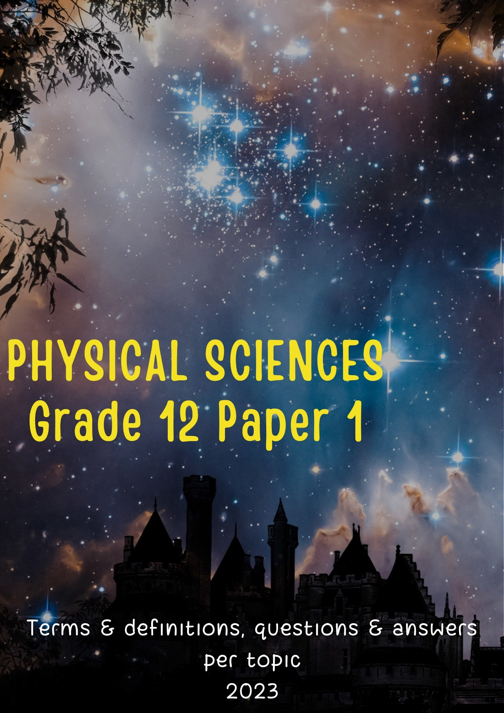
TABLE OF CONTENTS
OPTICAL PHENOMENA AND PROPERTIES OF MATERIALS 68
OPTICAL PHENOMENA AND PROPERTIES OF MATERIALS 79
CREDITS
The following question papers were used to compile this book: Department of Basic Education, National Senior Certificate Physical Sciences Question Papers, 2014 – 2022, Pretoria
This document was compiled as an extra resource to help you to perform well in physical sciences.
Answer all the questions on a certain topic in your homework book as soon as the topic is completed. Numerical answers are given at the back of this book. Use them to guide you about the correctness of your answers. If you differ from a given answer, you may want to check the correctness of your answer. In the case of vectors, only the magnitude of the answer is given. Interpret the direction in terms of your choice of direction. A separate book with fully worked out answers is available. Your teacher will decide when he/she will hand out that specific booklet.
Your teacher can, for example, give you two of the questions in this document as homework. The following day he/she will just check whether you answered them and whether you marked your answers. The teacher will only discuss those questions in which you do not understand the answers supplied in the document. Therefore, a lot of time will be saved, depending on when you receive the answer booklet.
Work through all the questions and answers of a particular topic before you sit for an examination, even if you answered the questions before.
Any additional resource is only of help when used correctly. Ensure that you make use of all help provided in the correct way to enable you to be successful. All the best and may you perform very well in physical sciences.
MECHANICS: NEWTON’S LAWS |
|
Acceleration |
The rate of change of velocity. |
Free-body diagrams |
This is a diagram that shows the relative magnitudes and directions of forces acting on a body/particle that has been isolated from its surroundings. |
Kinetic frictional force (fk) |
The force acting parallel to a surface and opposes the motion of a MOVING object relative to the surface. |
Mass |
The amount of matter in a body measured in kilogram (kg). |
Maximum static frictional force (f max ) s |
The static frictional force is a maximum (f max ) just before the object starts to move s across the surface. |
Newton's first law of motion |
A body will remain in its state of rest or motion at constant velocity unless a non-zero resultant/net force acts on it. |
Inertia |
The resistance of a body to a change in its state of rest or uniform motion in a straight line. Mass is a measure of an object’s inertia. |
Newton's second law of motion |
When a resultant/net force acts on an object, the object will accelerate in the direction of the force at an acceleration directly proportional to the force and inversely proportional to the mass of the object. In symbols: Fnet = ma |
Newton’s third law of motion |
When object A exerts a force on object B, object B SIMULTANEOUSLY exerts a force equal in magnitude but opposite in direction on object A. |
Newton's law of universal gravitation |
Each body in the universe attracts every other body with a force that is directly proportional to the product of their masses and inversely proportional to the square of the distance between their centres. In symbols: F Gm1m2 r 2 |
Normal force |
The force or the component of a force which a surface exerts on an object with which it is in contact, and which is perpendicular to the surface. |
Static frictional force (fs) |
The force acting parallel to a surface and opposes the tendency of motion of a STATIONARY object relative to the surface. |
Weight |
The gravitational force, in newton (N), exerted on an object. |
Weightlessness |
The sensation experienced when all contact forces are removed i.e. no external objects touch one's body. |
MECHANICS: MOMENTUM AND IMPULSE |
|
Contact forces |
Contact forces arise from the physical contact between two objects (e.g. a soccer player kicking a ball.) |
Non-contact forces |
Non-contact forces arise even if two objects do not touch each other (e.g. the force of attraction of the earth on a parachutist even when the earth is not in direct contact with the parachutist.) |
Momentum |
Linear momentum is the product of an object’s mass and its velocity. In symbols: p = mv Unit: N∙s or kg∙m∙s-1 |
Newton’s Second Law of motion in terms of momentum |
The net (or resultant) force acting on an object is equal to the rate of change of momentum of the object in the direction of the net force. Δp In symbols: Fnet = Δt |
Principle of conservation of linear momentum |
The total linear momentum in an isolated system remains constant (is conserved). In symbols: pbefore pafter |
Closed system |
A system in which the net external force acting on the system is zero. |
Impulse |
The product of the resultant/net force acting on an object and the time the resultant/net force acts on the object. In symbols: Impulse = FnetΔt Unit: N∙s or kg∙m∙s-1 |
Impulse-momentum theorem |
In symbols: FnetΔt = mΔv = m(vf – vi) Unit: N∙s or kg∙m∙s-1 |
Elastic collision |
A collision in which both total momentum and total kinetic energy are conserved. |
Inelastic collision |
A collision during which kinetic energy is not conserved. |
MECHANICS: VERTICAL PROJECTILE MOTION |
|
1-D motion |
One-dimensional motion./Linear motion./Motion in one line. |
Acceleration |
The rate of change of velocity. Symbol: a Unit: meters per second squared (m∙s-2) |
Gravitational acceleration (g) |
The acceleration of a body due to the force of attraction of the earth. |
Displacement |
Change in position. Symbol: ∆x (horizontal displacement) or ∆y (vertical displacement) Unit: meters (m) |
Free fall |
Motion of an objects under the influence of the gravitational force only. |
Gravitational force |
A force of attraction of one body on another due to their masses. |
Position |
Where an object is relative to a reference point. Symbol: x (horizontal position) or y (vertical position) Unit: meters (m) |
Projectile |
An object which has been given an intial velocity and on which the only force acting is the gravitational force/weight. |
Velocity |
The rate of change of position. Symbol: v Unit: meters per second (m∙s-1) |
|
|
MECHANICS: WORK, ENERGY AND POWER |
|
Work |
Work done on an object by a constant force is the product of the magnitude of the force, the magnitude of the displacement and the angle between the force and the displacement. In symbols: W = F x cos |
Positive work |
The kinetic energy of the object increases. |
Negative work |
The kinetic energy of the object decreases. |
Work-energy theorem |
The net/total work done on an object is equal to the change in the object's kinetic energy OR the work done on an object by a resultant/net force is equal to the change in the object's kinetic energy. In symbols: Wnet = Δ K = Kf - Ki. |
Principle of conservation of mechanical energy |
The total mechanical energy (sum of gravitational potential energy and kinetic energy) in an isolated system remains constant. (A system is isolated when the resultant/net external force acting on the system is zero.) In symbols: EM(intial) = EM(final) OR (Ep + Ek)initial = (Ep + Ek)final |
Conservative force |
A force for which the work done (in moving an object between two points) is independent of the path taken. Examples are gravitational force, the elastic force in a spring and electrostatic forces (coulomb forces). |
Non-conservative force |
A force for which the work done (in moving an object between two points) depends on the path taken. Examples are frictional force, air resistance, tension in a chord, etc. |
Power |
The rate at which work is done or energy is expended. In symbols: P = W t Unit: watt (W) |
|
|
WAVES, SOUND AND LIGHT: DOPPLER EFFECT |
|
Doppler Effect |
The apparent change in frequency/pitch of the sound detected by a listener because the sound source and the listener have different velocities relative to the medium of sound propagation. OR: The change in frequency/pitch of the sound detected by a listener due to relative motion between the sound source and the listener. |
Red shift |
Observed when light from an object increased in wavelength (decrease in frequency). A red shift occurs when a light source moves away from an observer. |
Blue shift |
Observed when light from an object decreased in wavelength (increase in frequency). A blue shift occurs when a light source moves towards an observer. |
Frequency |
The number of vibrations per second. Symbol: f Unit: hertz (Hz) or per second (s-1) |
Wavelength |
The distance between two successive points in phase. Symbol: λ Unit: meter (m) |
Wave equation |
Speed = frequency x wavelength |
ELECTRICITY AND MAGNETISM: ELECTROSTATICS |
|
Coulomb's law |
The magnitude of the electrostatic force exerted by one point charge on another point charge is directly proportional to the product of the magnitudes of the charges and inversely proportional to the square of the distance between them. In symbols: F = kQ1Q2 r2 |
Electric field |
A region of space in which an electric charge experiences a force. |
Electric field at a point |
The electric field at a point is the electrostatic force experienced per unit positive charge placed at that point. In symbols: E F Unit: N∙C-1 q |
Direction of electric field |
The direction of the electric field at a point is the direction that a positive test charge would move if placed at that point. |
|
|
ELECTRICITY AND MAGNETISM: ELECTRIC CIRCUITS |
|
Ohm's law |
The potential difference across a conductor is directly proportional to the current in the conductor at constant temperature. In symbols: R V I |
Ohmic conductors |
A conductor that obeys Ohm’s law i.e the ratio of potential difference to current remains constant. (Resistance of the conducter remains constant.) |
Non-ohmic conductors |
A conductor that does not obey Ohm’s law i.e the ratio of potential difference to current does NOT remain constant. (Resistance of the conductor increases as the current increases e.g. a bulb.) |
Power |
Rate at which work is done. In symbols: P = W Unit: watt (W) t Other formulae: P = VI; P = I2R; P = V 2 R |
kilowatt hour (kWh) |
The use of 1 kilowatt of electricity for 1 hour. |
Internal resistance |
The resistance within a battery that causes a drop in the potential difference of the battery when there is a current in the circuit. |
emf |
Maximum energy provided/work done by a battery per coulomb/unit charge passing through it. (It is the potential difference across the ends of a battery when there is NO current in the circuit.) |
Terminal potential difference |
The energy transferred to or the work done per coulomb of charge passing through the battery when the battery delivers a current. (It is the potential difference across the ends of a battery when there is a current in the circuit.) |
|
|
ELECTRICITY AND MAGNETISM: ELECTRICAL MACHINES |
|
Generator |
A device that transfers mechanical energy into electrical energy. |
Faraday’s law of electromagnetic induction |
The magnitude of the induced emf across the ends of a conductor is directly proportional to the rate of change in the magnetic flux linkage with the conductor. (When a conductor is moved in magnetic field, a potential difference is induced across the conductor.) |
Fleming’s Right Hand Rule for generators |
Hold the thumb, forefinger and second finger of the RIGHT hand at right angles to each other. If the forefinger points in the direction of the magnetic field (N to S) and the thumb points in the direction of the force (movement), then the second finger points in the direction of the induced current. |
Electric motor |
A device that transfers electrical energy into mechanical energy. |
Fleming’s Left Hand Rule for electric motors |
Hold the thumb, forefinger and second finger of the LEFT hand at right angles to each other. If the forefinger points in the direction of the magnetic field (N to S) and the second finger points in the direction of the conventional current, then the thumb will point in the direction of the force (movement). |
Coventional current |
Flow of electric charge from positive to negative. |
AC |
Alternating current The direction of the current changes each half cycle. |
DC |
Direct current The direction of the current remains constant. (The direction of conventional current is from the positive to the negative pole of a battery. The direction of electron current is from the negative to the positive pole of the battery.) |
Root-mean-square potential difference (Vrms) |
The root-mean-square potential difference is the AC potential difference that produces the same amount of electrical energy (power) as an equivalent DC potential difference. |
Peak potential difference (Vmax) |
The maximum potential difference value reached by the alternating current as it fluctuates i.e. the peak of the sine wave representing an AC potential difference. |
Root-mean-square current (Irms) |
Root-mean-square current is the alternating current that produces the same amount of energy (power) as and equivalent DC current. |
Peak current (Imax) |
The maximum current value reached by the alternating current as it fluctuates i.e. the peak of the sine wave representing an AC current. |
|
|
MATTER AND MATERIALS: OPTICAL PHENOMENA AND PROPERTIES OF MATERIALS |
|
Photo-electric effect |
The process whereby electrons are ejected from a metal surface when light of suitable frequency is incident on /shines on the surface. |
Threshold frequency (fo) |
The minimum frequency of light needed to emit electrons from a certain metal surface. |
Work function (Wo) |
The minimum energy that an electron in the metal needs to be emitted from the metal surface. |
Photo-electric equation |
E =Wo+ Kmax, where E = hf and Wo= hfo and Kmax = ½mv2max |
Atomic absorption spectrum |
Formed when certain frequencies of electromagnetic radiation that passes through a medium, e.g. a cold gas, is absorbed. |
Atomic emission spectrum |
Formed when certain frequencies of electromagnetic radiation are emitted due to an atom's electrons making a transition from a high-energy state to a lower energy state. |
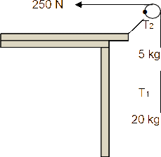
A constant horizontal force of 250 N pulls the second string as shown in the diagram below. The magnitudes of the tensions in P and Q are T1 and T2 respectively. Ignore the effects of air friction.
1.1 State Newton's second law of motion in words. (2)
Draw a labelled free-body diagram indicating ALL the forces acting on the 5 kg block. (3)
Calculate the magnitude of the tension T1 in string P. (6)
When the 250 N force is replaced by a sharp pull on the string, one
of the two strings break. Which ONE of the two strings, P or Q, will break?
Q
(1)
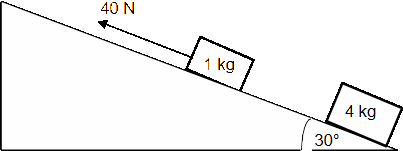
The magnitude of the kinetic frictional force between the surface and the 4 kg block is 10 N. The coefficient of kinetic friction between the 1 kg block and the surface is 0,29.
State Newton's third law of motion in words. (2)
Draw a labelled free-body diagram showing ALL the forces acting on the 1 kg block as it moves up the incline. (5)
Calculate the magnitude of the:
Kinetic frictional force between the 1 kg block and the surface (3)
Tension in the string connecting the two blocks (6)
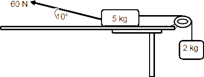
A 5 kg block, resting on a rough horizontal table, is connected by a light inextensible string passing over a light frictionless pulley to another block of mass 2 kg. The 2 kg block hangs vertically as shown in the diagram below.
A force of 60 N is applied to the 5 kg block at an angle of 10o to the horizontal, causing the block to accelerate to the left. The coefficient of
kinetic friction between the 5 kg block and the surface of the table is 0,5. Ignore the effects of air friction.
Draw a labelled free-body diagram showing ALL the forces acting on the 5 kg block. (5)
Calculate the magnitude of the:
Vertical component of the 60 N force (2)
Horizontal component of the 60 N force (2)
State Newton's Second Law of Motion in words. (2)
Calculate the magnitude of the:
Normal force acting on the 5 kg block (2)
Tension in the string connecting the two blocks (7)
QUESTION 4
Two blocks of mass M kg and 2,5 kg respectively are connected by a light, inextensible string. The string runs over a light, frictionless pulley, as shown in the diagram below. The blocks are stationary.
State Newton's THIRD law of
motion in words. (2)
Calculate the tension in the string.
table
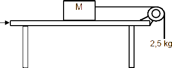
The coefficient of static friction (μs) between the unknown mass M and the surface of the table is 0,2.
Calculate the minimum value of M that will prevent the blocks from moving. (5) The block of unknown mass M is now replaced with a block of mass 5 kg. The 2,5 kg block now accelerates downwards. The coefficient of kinetic friction (µk) between the 5 kg block and the surface of
the table is 0,15.
Calculate the magnitude of the acceleration of the 5 kg block. (5)
A small hypothetical planet X has a mass of 6,5 x 1020 kg and a radius of 550 km.
Calculate the gravitational force (weight) that planet X exerts on a 90 kg rock on this planet's surface. (4)
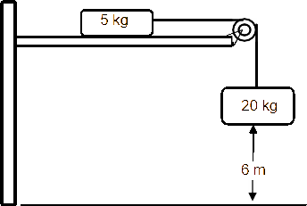
A 5 kg mass and a 20 kg mass are connected by a light inextensible string which passes over a light frictionless pulley. Initially, the 5 kg mass is held
stationary on a horizontal surface, while the 20 kg mass hangs vertically downwards, 6 m above the ground, as shown in the diagram, not drawn to scale. When the stationary 5 kg mass is released, the two masses begin to move. The coefficient of kinetic friction, μk, between the 5 kg mass and the horizontal surface is 0,4. Ignore the effects of air friction.
Calculate the acceleration of the 20 kg
mass. (5)
Calculate the speed of the 20 kg mass as it strikes the ground. (4)
At what minimum distance from the pulley should the 5 kg mass be placed initially, so that the
20 kg mass just strikes the ground? (1)
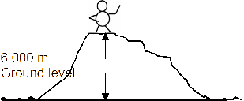
State Newton's Law of Universal Gravitation
in words. (2)
Calculate the difference in the weight of the climber
at the top of the mountain and at ground level. (6)
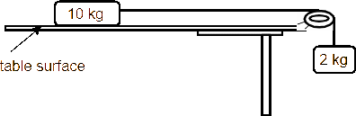
The diagram below shows a 10 kg block lying on a flat, rough, horizontal surface of a table. The block is connected by a light, inextensible string to a 2 kg block hanging over the side of the table. The string runs over a light, frictionless pulley. The blocks are stationary.
State Newton's FIRST law of motion in words. (2)
Write down the magnitude of the NET force
acting on the 10 kg block. (1)
When a 15 N force is applied vertically downwards on the 2 kg block, the 10 kg block accelerates to the right
at 1,2 m∙s-2.
Draw a free-body diagram for the 2 kg block when the 15 N force is applied to it. (3)
Calculate the coefficient of kinetic friction between the 10 kg block and the surface of the table. (7)
How does the value, calculated in QUESTION 6.4, compare with the value of the coefficient of STATIC friction for the 10 kg block and the table? Write down only LARGER THAN, SMALLER
THAN or EQUAL TO. (1)
If the 10 kg block had a larger surface area in contact with the surface of the table, how would this affect the coefficient of kinetic friction calculated in QUESTION 6.4? Assume that the rest of the system remains unchanged. Write down only INCREASES, DECREASES or REMAINS THE SAME.
Give a reason for the answer. (2)
QUESTION 7
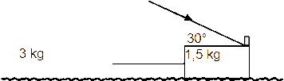
The coefficient of kinetic friction (µk) between the surface and each block is 0,15.
25 N
State Newton's Second Law of Motion in words. (2)
Calculate the magnitude of the kinetic frictional force acting on the 3 kg block. (3)
Draw a labelled free-body diagram showing ALL the forces acting on the 1,5 kg block. (5)
Calculate the magnitude of the:
Kinetic frictional force acting on the 1,5 kg block (3)
Tension in the cord connecting the two blocks (5)
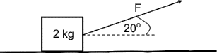
A crate of mass 2 kg is being pulled to the right across a rough horizontal surface by constant force F. The force F is applied at an angle of 20° to the horizontal, as shown in the diagram.
Draw a labelled free-body diagram showing ALL the
forces acting on the crate. (4)
A constant frictional force of 3 N acts between the surface and the crate. The coefficient of kinetic friction between the crate and the surface is 0,2. Calculate the magnitude of the:
Normal force acting on the crate (3)
Force F (4)
Acceleration of the crate (3)
A massive rock from outer space is moving towards the Earth.
State Newton's Law of Universal Gravitation in words. (2)
How does the magnitude of the gravitational force exerted by the Earth on the rock change as the distance between the rock and the Earth becomes smaller? Choose from INCREASES, DECREASES or REMAINS THE SAME. Give a reason for the answer. (2)
QUESTION 9
A small object of mass 2 kg is sliding at a constant velocity of 1,5 ms-1 down a rough plane inclined at 7° to the horizontal surface. At the bottom of the plane, the object continues sliding onto a rough horizontal surface and eventually comes to a stop. The
coefficient of kinetic friction between the object and both the inclined and the horizontal surfaces is the same.
Write down the magnitude of the net force acting on the object. (1)
Draw a labelled free-body diagram for the object while it is on the inclined plane. (3)
Calculate the:
Magnitude of the frictional force acting on the object while it is sliding down the inclined plane (3)
Coefficient of kinetic friction between the object and the surfaces (3)
Distance the object travels on the horizontal surface before it comes to a stop (5)
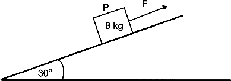
An 8 kg block, P, is being pulled by constant force F up a rough inclined plane at an angle of 30° to the horizontal, at CONSTANT SPEED. Force F is parallel to the inclined plane, as shown in the diagram.
State Newton's First Law in words. (2)
Draw a labelled free-body diagram for block P. (4)
The kinetic frictional force between the block and the surface of the inclined plane is 20,37 N.
Calculate the magnitude of force F. (5)
Force F is now removed and the block ACCELERATES down the plane. The kinetic frictional force remains 20,37 N.
Calculate the magnitude of the acceleration of the block. (4)
A 200 kg rock lies on the surface of a planet. The acceleration due to gravity on the surface of the planet is 6,0 m·s-2.
State Newton's Law of Universal Gravitation in words. (2)
Calculate the mass of the planet if its radius is 700 km. (4)
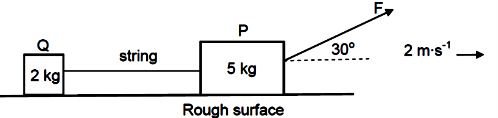
State Newton's First Law of Motion in words. (2)
Draw a labelled free-body diagram for box Q. (4)
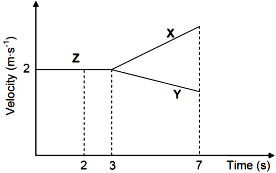
Calculate the magnitude of force F. (6) The string connecting P and Q suddenly breaks after 3 s while force F is still being applied. Learners draw the velocity-time
graph for the motion of P and Q before and after the string breaks, as shown alongside.
Write down the time at which the string breaks.
Which portion (X, Y or Z) of the graph represents the motion of box Q, after the string breaks? Use the information in the graph to fully support the answer. (4)
QUESTION 12
Block P, of unknown mass, is placed on a rough horizontal surface. It is connected to a second block of mass 3 kg,
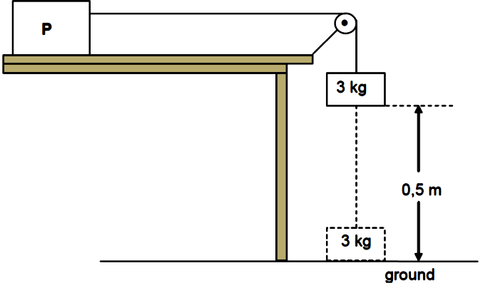
12.1 Define the term acceleration in words. (2)
12.2 Calculate the magnitude of the
acceleration of the 3 kg block using equations
of motion. (3)
Calculate the magnitude of the tension in the string. (3)
The magnitude of the kinetic frictional force
experienced by block P is 27 N.
Draw a labelled free-body diagram for block P. (4)
Calculate the mass of block P. (3)
QUESTION 13
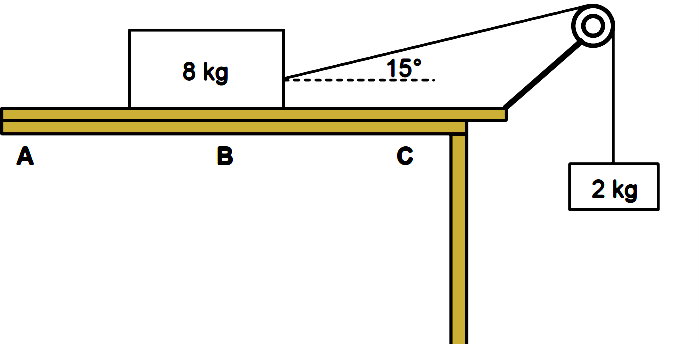
A block, of mass 8 kg, is placed on a rough horizontal surface. The 8 kg block, which is connected to a 2 kg block by means of a light inextensible string passing over a light frictionless pulley, starts sliding from point A, as shown.
13.1 State Newton's Second Law in words. (2)
Draw a labelled free-body diagram for the
8 kg block. (4)
When the 8 kg block reaches point B, the angle between the string and the horizontal is
15° and the acceleration of the system is 1,32 m·s-2.
Give a reason why the system is NOT in equilibrium. (1)
Use the 2 kg mass to calculate the tension in the string. (3)
Calculate the kinetic frictional force between the 8 kg block and the horizontal surface. (4)
As the 8 kg block moves from B to C, the kinetic frictional force between the 8 kg block and the
horizontal surface is not constant. Give a reason for this statement. (1)
The horizontal surface on which the 8 kg block is moving, is replaced by another horizontal surface made from a different material.
Will the kinetic frictional force, calculated in QUESTION 13.3.3 above, change? Choose from: YES or NO. Give a reason for the answer. (2)
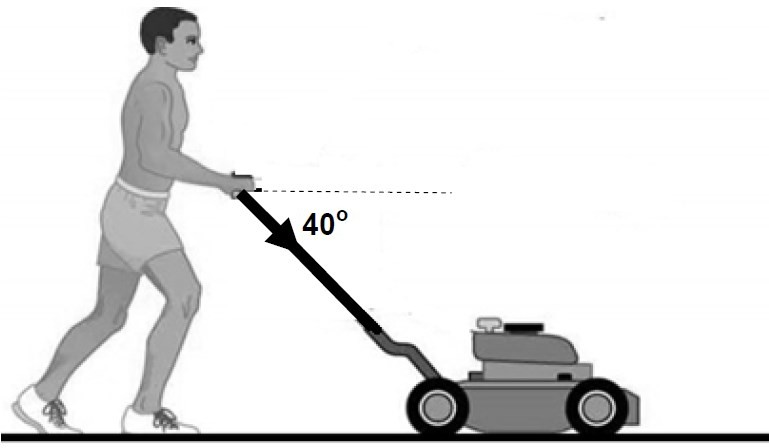
Draw a labelled free-body diagram for
the lawn mower. (4)
Why is it CORRECT to say that the moving lawn mower is in equilibrium? (1)
Calculate the magnitude of the frictional force acting between the lawn mower
and the grass. (3)
The lawn mower is now brought to a stop.
Calculate the magnitude of the constant force that must be applied through the handle in order to accelerate the lawn mower from rest to 2 m∙s-1 in a time of 3 s. Assume that the frictional
force between the lawn mower and grass remains the same as in QUESTION 14.1.3. (6)
Planet Y has a radius of 6 x 105 m. A 10 kg mass weighs 20 N on the surface of planet Y.
Calculate the mass of planet Y. (4)
QUESTION 15
Block P, of mass 2 kg, is connected to block Q, of mass 3 kg, by a light inextensible string. Both blocks are on a plane inclined at an angle of 30° to the horizontal. Block Q is pulled by a constant force of 40 N at an angle
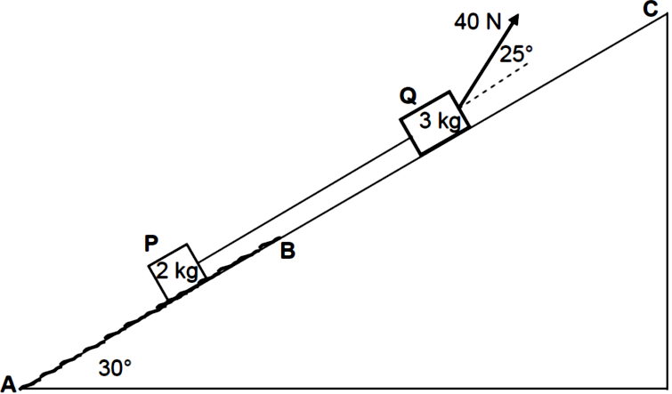
Block P moves on a rough section, AB, of the incline, while block Q moves on a frictionless section, BC, of the incline.
See diagram.
An average constant frictional force of 2,5 N acts on block P as it moves from A to B up
the incline.
State Newton's Second Law in words.(2)
Draw a labelled free-body diagram for block P. (4)
Calculate the magnitude of the acceleration of block P while block P
is moving on section AB. (8)
If block P has now passed point B, how will its acceleration compare to that calculated in QUESTION 15.3? Choose from GREATER THAN, SMALLER THAN or EQUAL TO.
Give a reason for the answer. (2)
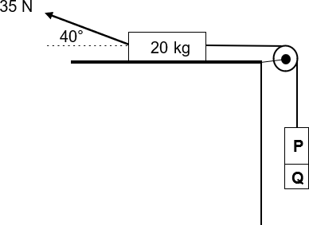
A 20 kg block, resting on a rough horizontal surface, is connected to blocks P and Q by a light inextensible string moving over
a frictionless pulley. Blocks P and Q are glued together and have a combined mass of m. A force of 35 N is now applied to the 20 kg block at an angle of 40° with the horizontal, as shown. The 20 kg block experiences a frictional force of magnitude 5 N as it moves to the RIGHT at a CONSTANT SPEED.
Define the term normal force. (2)
Draw a labelled free-body diagram of the 20 kg block. (5)
Calculate the combined mass m of the two blocks. (5)
At a certain stage of the motion, block Q breaks off and falls down. How will EACH of the following be affected when this happens?
The tension in the string. Choose from INCREASES, DECREASES or REMAINS
THE SAME. (1)
The velocity of the 20 kg block. Explain the answer. (3)
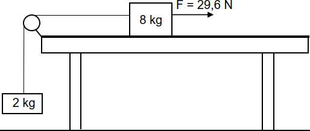
An 8-kg block, on a rough horizontal surface, is connected to a 2-kg block by a light inextensible string passing over a frictionless pulley, as shown. The 8-kg block moves at
a constant speed when pulled by a 29,6 N horizontal force to the right. The frictional force acting on the 8-kg block is 10 N.
State Newton's Second Law of Motion in words. (2)
Draw a labelled free-body diagram for the 8-kg block. (5)
Calculate the tension in the string. (3)
The 29,6 N horizontal force is now increased to 50 N.
Apply Newton's Second Law to EACH block and calculate the:
Magnitude of the acceleration of the 8-kg block (5)
Tension in the string (2)
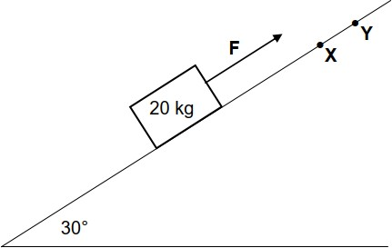
A 20 kg block is placed on a rough surface inclined at 30° to the horizontal. A constant force F, acting parallel to the surface, is applied on the block so that the block moves up the incline at
a CONSTANT VELOCITY of 2 m∙s-2. Refer to the diagram. A constant kinetic frictional force of 18 N acts on the block.
State Newton's First Law in words. (2)
Draw a labelled free-body diagram for the block. (4)
Calculate the magnitude of force F. (4)
Force F is removed when the block reaches point X on the
surface. The block continues to move up the surface and comes to rest momentarily at point Y. Assume that the kinetic frictional force acting on the block remains at 18 N as it moves from point X to point Y.
Write down the net force acting on the block as it moves from X to Y. (2)
Calculate the distance between points X and Y. (4)
QUESTION 19
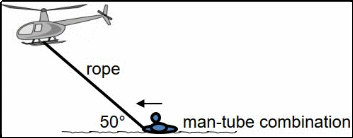
The man, of mass 70 kg, holds onto the inflated tube of mass 4 kg, while the helicopter is flying horizontally at a CONSTANT speed. An average frictional force of 300 N is exerted on the
man-tube combination while they are dragged horizontally along
the surface of the water by the helicopter. The rope makes an angle of 50° with the surface of the water,
as shown in the diagram. Assume that the rope is inextensible and massless, and the water of the dam does not flow.
State Newton's First Law of Motion in words. (2)
Draw a free-body diagram of the man-tube combination while they are being dragged. (4)
Calculate the tension in the rope. (4)
How will the answer to QUESTION 19.3 change if the helicopter ACCELERATES while dragging the man? The frictional force and the angle between the rope and the surface of the water remain the
same. Choose from INCREASES, DECREASES or NO CHANGE. Give a reason for the answer. (2)
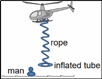
Calculate the magnitude of the average upward force exerted on the
inflated tube while it is sinking. Assume that the average upward force is constant for the motion. (5)
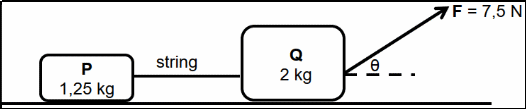
Crate P of mass 1,25 kg is connected to another crate, Q, of mass 2 kg by a light inextensible string. The two crates are placed on a rough horizontal surface.
A constant force F of magnitude 7,5 N, acting at angle θ to the horizontal, is
applied on crate Q as shown in the diagram. The crates accelerate at 0,1 m∙s-2 to the right. Crate P experiences a constant frictional force of 1,8 N and crate Q experiences a constant frictional force of 2,2 N.
State Newton's Second Law of Motion in words. (2)
Draw a labelled free-body diagram for crate P. (4)
Calculate the magnitude of:
The tension in the string (4)
Angle θ (3)
A ball, A, is thrown vertically upward from a height, h, with a speed of 15 m∙s-1. AT THE SAME INSTANT, a second identical ball, B, is dropped from the same height as ball A as shown in the diagram below. Both balls undergo free fall and eventually hit the ground.
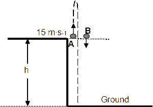
Calculate the time it takes for ball A to return to its starting
point. (4)
Calculate the distance between ball A and ball B when ball A
is at its maximum height. (7)
Sketch a velocity-time graph in the ANSWER BOOK for the motion of ball A from the time it is projected until it hits the ground. Clearly show the following on your graph:
The initial velocity
The time it takes to reach its maximum height
The time it takes to return to its starting point (4)
QUESTION 2
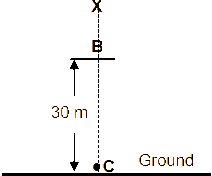
Ignore the effects of air friction.
Name the type of motion described above. (1)
Calculate the magnitude of the velocity of the object at point B. (4)
Calculate the height of point X above the ground. (5) After hitting the ground, the object bounces once and then comes to rest on the ground.
Sketch an acceleration-time graph for the entire motion of the object. (3)
A hot air balloon is rising vertically at a constant velocity. When the hot air balloon reaches point A a few metres above the ground, a man in the hot air balloon drops a ball which hits the ground and bounces. Ignore the effects of friction.
The velocity-time graph below represents the motion of the ball from the instant it is dropped until after it bounces for the first time. The time interval between bounces is ignored. THE UPWARD DIRECTION IS TAKEN AS POSITIVE. USE INFORMATION FROM THE GRAPH TO ANSWER THE QUESTIONS THAT FOLLOW.
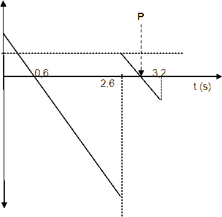
v (m∙s-1)
5,88
2,94
0
- 2,94
Write down the
magnitude of the velocity of the hot air balloon. (1)
Calculate the height above the ground
from which the ball was dropped. (3)
Calculate the time at the point P
indicated on the graph (2)
Calculate the maximum height the
ball reaches after the first bounce. (3)
Calculate the distance between
the ball and hot air balloon when the ball is at its maximum height after the
first bounce (4)
-19,60
30 m
QUESTION 4
B 9
m∙s-1 16
m∙s-1
A ground
4.1 Calculate the time taken by ball A to return to the ground. (4)
Sketch a velocity-time graph for ball A. Show the following on the graph:
Initial velocity of ball A
Time taken to reach the highest point of the motion
Time taken to return to the ground (3)
ONE SECOND after ball A is projected upwards, a second
ball, B, is thrown vertically downwards at a velocity of 9 m∙s-1 from a balcony 30 m above the ground. Refer to the diagram.
Calculate how high above the ground ball A will be at the
instant the two balls pass each other. (6)
A man throws ball A downwards with a speed of 2 m∙s-1 from the edge of a window, 45 m above a dam of water. One second later he throws a second ball, ball B, downwards and observes that both balls strike the surface of the water in the dam at the same time. Ignore air friction.
5.1 Calculate the:
Speed with which ball A hits the surface of the water (3)
Time it takes for ball B to hit the surface of the water (3)
Initial velocity of ball B (5)
On the same set of axes, sketch a velocity versus time graph for the motion of balls A and B. Clearly indicate the following on your graph:
Initial velocities of both balls A and B
The time of release of ball B
The time taken by both balls to hit the surface of the water (5)
Ball A is projected vertically upwards from the ground, near a tall building, with a speed of 30 m∙s-1. Ignore the effects of air friction.
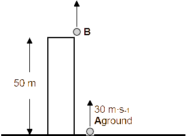
Calculate the total time that ball A will be in the air. (4)
Calculate the distance travelled by ball A during the last
second of its fall. (4)
TWO SECONDS after ball A is projected upwards, ball B is projected vertically upwards from the roof of the same building. The roof the building is 50 m above the ground. Both balls A and B reach the ground at the same time. Refer to the diagram. Ignore the effects of air friction.
Calculate the speed at which ball B was projected
upwards from the roof. (4)
Sketch velocity-time graphs for the motion of both balls A and B on the same set of axes. Clearly label the graphs for balls A and B respectively. Indicate the following on the graphs:
Time taken by both balls A and B to reach the ground
Time taken by ball A to reach its maximum height (4)
QUESTION 7
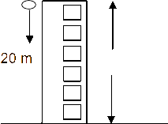
Define the term free fall. (4)
Calculate the speed at which the ball hits the ground. (4)
Calculate the time it takes the ball to reach the ground. (3)
Sketch a velocity-time graph for the motion of the ball (no values
required). (2)
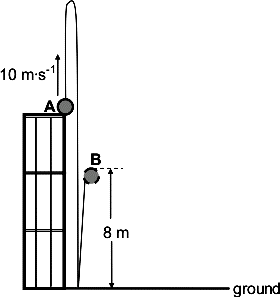
A ball is projected vertically upwards with a speed of 10 m∙s-1 from point A, which is at the top edge of a building. The ball hits the ground after 3 s. It is in contact with the ground for 0,2 s and then bounces vertically upwards, reaching a maximum height of 8 m at point B. See the diagram. Ignore the effects of friction.
Why is the ball considered to be in free fall during
its motion? (2)
Calculate the:
Height of the building (3)
Speed with which the ball hits the ground (3)
Speed with which the ball leaves the ground (3)
Draw a velocity versus time graph for the complete motion of the ball from A to B. Show the following on the graph:
The magnitude of the velocity with which it hits the ground
The magnitude of the velocity with which it leaves the ground
The time taken to reach the ground, as well as the time at which it leaves the ground (4)
A hot-air balloon moves vertically downwards at a constant velocity of 1,2 m∙s-1. When it reaches a height of 22 m from the ground, a ball is dropped from the balloon. Refer to the diagram.
22 m
1,2 m·s-
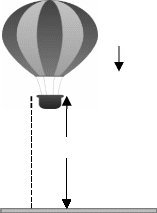
Assume that the dropping of the ball has no effect on the speed of the hot-air balloon. Ignore air friction for the motion of the ball.
Explain the term projectile motion. (2)
Is the hot-air balloon in free fall? Give a reason for the answer. (2)
Calculate the time it takes for the ball to hit the ground after it is dropped. (4)
When the ball lands on the ground, it is in contact with the ground for 0,3 s and
then it bounces vertically upwards with a speed of 15 m∙s-1.
ground
Calculate how high the balloon is from the ground when the ball reaches its maximum height after the first bounce. (6)
Stone A is projected vertically upwards at a speed of 12 m∙s-1 from a height h above the ground. Ignore the effects of air resistance.
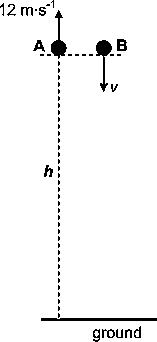
At the same instant that stone A is projected upwards, stone B is thrown
vertically downwards from the same height at an unknown speed, v. Refer to the diagram. When stone A reaches its maximum height, the speed of stone B is 3v.
Calculate the speed, v, with which stone B is thrown downwards. (4)
At the instant stone A passes its initial position on its way down, stone B hits the ground.
Calculate the height h. (3)
Sketch velocity-time graphs for the complete motions of stones A and B
on the same set of axes. Label your graphs for stones A and B clearly.
Show the time taken for stone A to reach its maximum height AND the velocity with which stone B is thrown downwards on the graphs. (4)
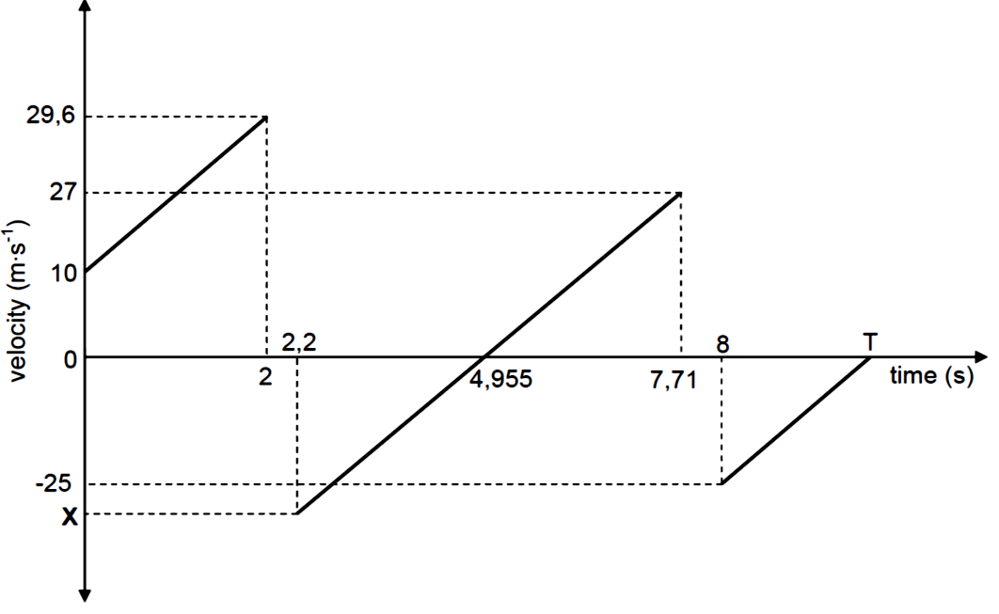
Write down the speed with which the ball is thrown downwards. (1)
ALL parts of the graph have the same gradient. Give a reason for this. (2)
Calculate the height from which the ball is thrown. (3)
Calculate the time (T) shown on the graph. (4)
Write down the:
Time that the ball is in contact with the ground at the first bounce (1)
Time at which the ball reaches its maximum height after the first bounce (2)
Value of X (1)
Is the collision of the ball with the ground elastic or inelastic? Give a reason for the answer using information in the graph. (2)
QUESTION 12
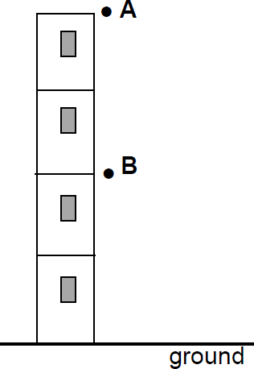
In the diagram shown, point A is at the top of a building. Point B is exactly halfway
between the point A and the ground. Ignore air resistance.
Define the term free fall. (2)
A ball of mass 0,4 kg is dropped from point A. It passes point B after 1 s.
Calculate the height of point A above the ground. (3)
When the ball strikes the ground it is in contact with the ground for 0,2 s and then bounces vertically upwards, reaching a maximum height at point B.
Calculate the magnitude of the velocity of the ball when it strikes the ground. (3)
Calculate the magnitude of the average net force exerted on the ball while it
is in contact with the ground. (6)
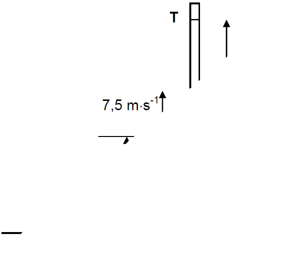
QUESTION 14
In a competition, participants must attempt to throw a ball vertically upwards past point T, marked on a tall vertical pole. Point T is 3,7 m above the ground. Point T may, or may not, be the highest point during the motion of the ball. One participant throws the ball vertically upwards at a velocity of 7,5 m·s-1 from a point that is 1,6 m above the ground, as shown in the diagram. Ignore the effects of air resistance.
In which direction is the net force acting on the ball while it moves towards point T? Choose from: UPWARDS or DOWNWARDS. Give a reason for the answer. (2)
Calculate the time taken by the ball to reach its highest point. (3)
Determine, by means of a calculation, whether the ball will pass point T or not. (6)
Draw a velocity-time graph for the motion of the ball from the instant it is thrown upwards until it reaches its highest point. Indicate the following on the graph:
The initial velocity and final velocity
Time taken to reach the highest point (2)
A ball is thrown vertically upwards, with velocity v, from the edge of a roof of a 40 m tall building. The ball takes 1,53 s to reach its maximum height. Ignore air resistance.
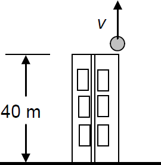
Calculate the:
Magnitude of the initial velocity v of the ball (3)
Maximum height reached by the ball above the edge of
the roof (3)
Take the edge of the roof as reference point. Determine the position
of the ball relative to the edge of the roof after 4 s. (3)
Will any of the answers to QUESTIONS 3.2 and 3.3 change if the height of the building is 30 m? Choose from YES or NO. Give a reason for the answer. (3)
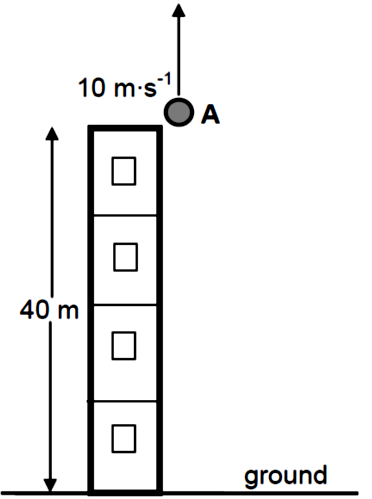
[14]
QUESTION 15
Stone A is thrown vertically upwards with a speed of 10 m∙s-1 from the edge of the roof of a 40 m high building, as shown in the diagram.
Ignore the effects of air friction. Take the ground as reference.
Define the term free fall. (2)
Calculate the maximum HEIGHT ABOVE THE GROUND reached by stone A. (4)
Write down the magnitude and direction of the acceleration
of stone A at this maximum height. (2)
Stone B is dropped from rest from the edge of the roof, x seconds after stone A was thrown upwards.
Stone A passes stone B when the two stones are 29,74 m
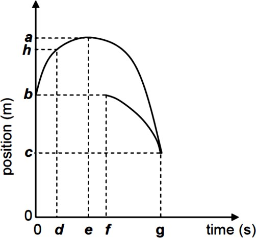
The graphs of position versus time for part of the motion of both stones are shown alongside.
Which of labels a to h on the graphs above represents EACH of the following?
The time at which stone A has a positive velocity (1)
The maximum height reached by stone A (1)
The time when stone B was dropped (1)
The height at which the stones pass each other (1)
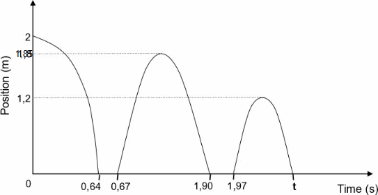
Define the term
free fall. (2)
Use the graph and determine:
The time that the
ball is in contact with the floor before the first
bounce (2)
The time it takes the ball to reach its maximum height after the first bounce (2)
The speed at which the ball leaves the floor at the first bounce (3)
Time t indicated on the graph (6)
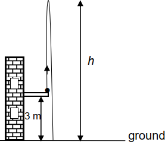
A ball, of mass 0,06 kg, is thrown vertically upwards from the balcony of a building, 3 m above the ground. The ball reaches a maximum height h above the ground, as shown in the diagram. Ignore the effects of air resistance.
Name the force acting on the ball while it is in free fall. (1)
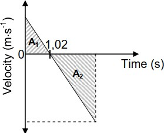
Write down the acceleration of the ball at time t = 1,02 s. (2)
Consider the areas A1 and A2 shown in the graph above. Write down the numerical value
represented by the DIFFERENCE in areas A1 and A2. (1)
Calculate the:
Speed at which the ball is thrown upwards (3)
Height h (4)
After hitting the ground, the ball bounces vertically upwards and reaches a new maximum height in 1,1 s.
Calculate the work done by the ground on the ball while the ball is in contact with the ground. (6)
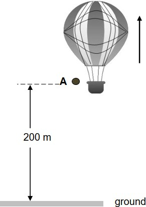
A hot-air balloon is moving upwards at a CONSTANT UNKNOWN speed.
Is the hot air balloon in free fall? Choose from YES or NO. Give
a reason for the answer. (2)
When the balloon is 200 m above the ground, a small stone A is dropped from the balloon. See the diagram. Another small stone B is dropped 5 s later from the balloon while the balloon is still moving upwards at constant velocity.
Stone A strikes the ground at a speed of 62,68 m∙s-1. Ignore air resistance.
Calculate the:
Speed of the hot air balloon (3)
Time it takes stone A to strike the ground (3)
Distance between the hot-air balloon and stone B at the instant when stone A strikes the ground (6)
On the same set of axes, draw position-time graphs for both the hot-air balloon and stone A from the moment the stone is dropped
until it strikes the ground. Use the ground as zero reference. Label your
graphs BALLOON and A. (4)
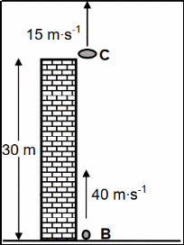
A small disc, C, is thrown vertically upwards at a speed of 15 m∙s-1 from the edge of the roof of a building of height 30 m. AFTER 0,5 s, a small ball B is shot vertically upwards from the foot of the building at a speed of 40 m∙s-1 in order to hit disc C. Ignore the effects of air resistance.
Explain the term projectile. (2)
Calculate the:
Time taken by disc C to reach its maximum height (3)
Maximum height above the ground reached by disc C (4)
Calculate the time from the moment that disc C was thrown upwards
until the time ball B hits the disc. (6)
On the same set of axes, sketch graphs of velocity versus time for disk C and ball B from the moment that disc C was thrown upwards until ball B hits disc C. Label the graph for ball B as B and the graph for disc C as C. Clearly indicate the following on the graphs:
The initial velocities of ball B and disc C
The time at which ball B was shot upward
The time at which disc C reaches its maximum height
The time at which ball B hits disc C (5)
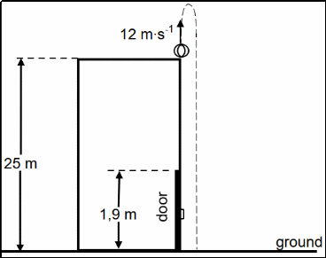
A ball is thrown vertically upwards from the top of a building of height 25 m with a velocity of 12 m∙s-1. On its way down, the ball passes a door which has a height of 1,9 m and then strikes the ground, as shown in the diagram. Ignore the effects of air friction.
Define the term free fall. (2)
Calculate the:
Time taken for the ball to reach its
maximum height (3)
Velocity with which the ball strikes the ground (4)
Time it took the ball to move from the
top of the door to the ground (4)
Draw a velocity versus time graph for the motion of the ball from the moment that the
ball is thrown upwards until it strikes the ground. Use the ground as zero reference. Clearly indicate the following on your graph:
The velocity with which the ball was thrown upwards
Time taken by the ball to reach its maximum height
The velocity with which the ball strikes the ground
(3)
Dancers have to learn many skills, including how to land correctly. A dancer of mass 50 kg leaps into the air and lands feet first on the ground. She lands on the ground with a velocity of 5 m∙s-1. As she lands, she bends her knees and comes to a complete stop in 0,2 seconds.
Calculate the momentum with which the dancer reaches the ground. (3)
Define the term impulse of a force. (2)
Calculate the magnitude of the net force acting on the dancer as she lands. (3) Assume that the dancer performs the same jump as before but lands without bending her knees.
Will the force now be GREATER THAN, SMALLER THAN or EQUAL TO the force calculated in QUESTION 1.3? (1)
Give a reason for the answer to QUESTION 1.4. (3)
QUESTION 2
Percy, mass 75 kg, rides at 20 m∙s-1 on a quad bike (motorcycle with four wheels) with a mass of 100 kg. He suddenly applies the brakes when he approaches a red traffic light on a wet and slippery road. The wheels of the quad bike lock and the bike slides forward in a straight line. The force of friction causes the bike to stop in 8 s.
Define the concept momentum in words. (2)
Calculate the change in momentum of Percy and the bike, from the moment the brakes
lock until the bike comes to a stop. (4)
Calculate the average frictional force exerted by the road on the wheels to stop the bike. (4)
QUESTION 3
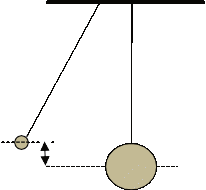
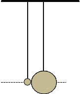
Diagram 1Diagram 2
0,2 m
Ball A of mass 0,2 kg is displaced through a vertical distance of 0,2 m, as shown in Diagram 2 above. When ball A is released, it collides elastically and head-on with ball B. Ignore the effects of air friction.
What is meant by an elastic collision? (2)
Immediately after the collision, ball A moves horizontally backwards (to the left). Ball B acquires kinetic energy of 0,12 J and moves horizontally forward (to the right). Calculate the:
Kinetic energy of ball A just before it collides with ball B (Use energy principles only.) (3)
Speed of ball A immediately after the collision (4)
Magnitude of the impulse on ball A during the collision (5)
QUESTION 4
A bullet of mass 20 g is fired from a stationary rifle of mass 3 kg. Assume that the bullet moves horizontally.
Immediately after firing, the rifle recoils (moves back) with a velocity of 1,4 m∙s-1.
Calculate the speed at which the bullet leaves the rifle. (4)
The bullet strikes a stationary 5 kg wooden block fixed to a flat, horizontal table. The bullet is brought to rest after travelling a distance of 0,4 m into the block. Refer to the diagram below.
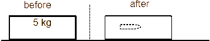
Calculate the magnitude of the average force exerted by the block on the bullet. (5)
How does the magnitude of the force calculated in QUESTION 3.2 compare to the magnitude
of the force exerted by the bullet on the block? Write down only LARGER THAN, SMALLER THAN or THE SAME. (1)
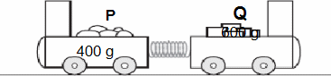
State the principle of conservation of linear momentum in words. (2)
Calculate the:
Velocity of trolley P after the trolleys are released (4)
Magnitude of the average force exerted by the spring on trolley Q (4)
Is this an elastic collision? Only answer YES or NO. (1)
QUESTION 6
The diagram below shows two sections, XY and YZ, of a horizontal, flat surface. Section XY is smooth, while section YZ is rough. A 5 kg block, moving with a velocity of 4 m∙s-1 to the right, collides head-on with a stationary 3 kg block. After the collision, the two blocks stick together and move to the right, past point Y. The combined blocks travel for 0,3 s from point Y before coming to a stop at point Z.
4 m∙s-1
0 m∙s-1
X 5 kg 3 kg Y Z
State the principle of conservation of linear momentum in words. (2)
Calculate the magnitude of the:
Velocity of the combined blocks at point Y (4)
Net force acting on the combined blocks when they move through section YZ (4)
QUESTION 7
The graph below shows how the momentum of car A changes with time just before and just after a head-on collision with car B. Car A has a mass of 1 500 kg, while the mass of car B is 900 kg. Car B was travelling at a constant velocity of 15 m∙s-1 west before the collision. Take east as positive and consider the system as
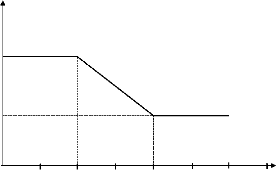
40 000 ─
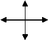
Momentum (kg∙m·s-1)
30 000 ─ W E
S
20 000 ─
14 000 ─
10 000 ─
0
20 20,1
20,2
20,3
Time (s)
What do you understand by the term isolated system as used in physics? (1) Use the information in the graph to answer the following questions.
Calculate the:
Magnitude of the velocity of car A just before the collision (3)
Velocity of car B just after the collision (5)
Magnitude of the net average force acting on car A during the collision (4)
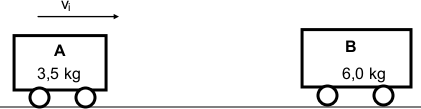
Trolley A moves towards trolley B at constant velocity. The table
below shows the position of trolley A for time intervals of 0,4 s before it collides with trolley B.
RELATIONSHIP BETWEEN POSITION AND TIME FOR TROLLEY A |
||||
Position of trolley A (m) |
0 |
0,2 |
0,4 |
0,6 |
Time (s) |
0 |
0,4 |
0,8 |
1,2 |
Use the table above to prove that trolley A is moving at constant velocity before it collides
with trolley B. (3)
State the principle of conservation of linear momentum in words. (2)
At time t = 1,2 s, trolley A collides with stationary trolley B. The collision time is 0,5 s after which the two trolleys move off together.
Calculate the magnitude of the average net force exerted on trolley B by trolley A. (6)
QUESTION 9
Define the term impulse in words. (2)
The diagram below shows a gun mounted on a mechanical support which is fixed to the ground. The gun is capable of firing bullets rapidly in a horizontal direction. Each bullet travels at a speed of 700 m∙s-1 in an easterly direction when it leaves the gun.
(Take the initial velocity of a bullet, before being fired, as zero.)
gun
700 m∙s-1 N
bullets W E
mechanical support
S
ground
The gun fires 220 bullets per minute. The mass of each bullet is 0,03 kg. Calculate the:
Magnitude of the momentum of each bullet when it leaves the gun (3)
The net average force that each bullet exerts on the gun (5)
Without any further calculation, write down the net average horizontal force that the mechanical
support exerts on the gun. (2)
QUESTION 10
A 2 kg block is at rest on a smooth, frictionless, horizontal table. The length of the block is x. A bullet of mass 0,015 kg, travelling east at 400 m∙s-1, strikes the block and passes straight through it with constant acceleration. Refer to the diagram below. Ignore any loss of mass of the bullet and the block.
State the principle of conservation of linear momentum in words. (2)
The block moves eastwards at 0,7 m∙s-1 after the bullet has emerged from it.
Calculate the magnitude of the velocity of the bullet immediately after it emerges from the
block. (4)
If the bullet takes 0,002 s to travel through the block, calculate the length, x, of the block. (5)
The diagram below shows two skateboards, A and B, initially at rest, with a cat standing on skateboard A. The skateboards are in a straight line, one in front of the other and a short distance apart. The surface is flat, frictionless and horizontal.
State the principle of conservation of linear momentum in words. (2) EACH skateboard has a mass of 3,5 kg. The cat, of mass 2,6 kg, jumps from skateboard A with a horizontal
velocity of 3 m∙s-1 and lands on skateboard B with the same velocity. Refer to the diagram below.
Calculate the velocity of skateboard A just after the cat has jumped from it. (5)
Immediately after the cat has landed, the cat and skateboard B move horizontally to the right at
1,28 m∙s-1. Calculate the magnitude of the impulse on skateboard B as a result of the cat's landing. (3)
QUESTION 12
A trolley of mass 1,5 kg is held stationary at point A at the top of a frictionless track. When the 1,5 kg trolley is released, it moves down the track. It passes point P at the bottom of the incline and collides with a stationary 2 kg trolley at point B. Refer to the diagram. Ignore air resistance and rotational effects.
Use the principle of conservation of mechanical energy to calculate the speed
of the 1,5 kg trolley at point P. (4) When the two trolleys collide, they stick together and continue moving with constant velocity.
The principle of conservation of linear momentum is given by the incomplete statement below.
In a/an … system, the … linear momentum is conserved.
Rewrite the complete statement and fill in the missing words or phrases. (2)
Calculate the speed of the combined trolleys immediately after the collision. (4)
Calculate the distance travelled by the combined trolleys in 3 s after the collision. (3)
QUESTION 13
Initially a girl on roller skates is at rest on a smooth horizontal pavement. The girl throws a parcel, of mass 8 kg, horizontally to the right at a speed of 4 m·s-1.
Immediately after the parcel has been thrown, the girl-roller-skate combination moves at a speed of 0,6 m·s-1. Ignore the effects of friction and rotation.
Define the term momentum in words. (2)
Will the girl-roller-skate combination move TO THE RIGHT or TO THE LEFT after the parcel is
thrown? NAME the law in physics that can be used to explain your choice of direction. (2) The total mass of the roller skates is 2 kg.
Calculate the mass of the girl. (5)
Calculate the magnitude of the impulse that the girl-roller-skate combination is experiencing while the parcel is being thrown. (3)
Without any further calculation, write down the change in momentum experienced by the parcel while
it is being thrown. (2)
A soccer player kicks a ball of mass 0,45 kg to the east. The ball travels horizontally at a velocity of 9 m⋅s-1 along a straight line, without touching the ground, and enters a container lying at rest on its side, as shown in the diagram below. The mass of the container is 0,20 kg.
The ball is stuck in the container after the collision. The ball and container now move together along a straight line towards the east. Ignore friction and rotational effects.
State the principle of conservation of linear momentum in words. (2)
Calculate the magnitude of the velocity of the ball-container system immediately after the collision. (4)
Determine, by means of a suitable calculation, whether the collision between the ball and container is elastic or inelastic. (5)
QUESTION 15
A bullet moves east at a velocity of 480 m∙s-1. It hits a wooden block that is fixed to the floor. The bullet takes
0,01 s to move through the stationary block and emerges from the block at a velocity of 80 m∙s-1 east.
See the diagram below. Ignore the effects of air resistance. Consider the block-bullet system as an isolated system.
Explain what is meant by an isolated system as used in Physics. (2)
The magnitude of the momentum of the bullet before it enters the block is 24 kg∙m∙s-1.
Calcualte the:
Mass of the bullet (3)
Average net force exerted by the wooden block on the bullet (5)
QUESTION 16
Ball P of mass 0,16 kg, moving east at a speed of 10 m∙s-1, collides head-on with another ball Q of mass 0,2 kg, moving west at a speed of 15 m∙s-1. After the collision, ball P moves west at a speed of 5 m∙s-1, as shown in the diagram below. Ignore the effects of friction and the rotational effects of the balls.
Define the term momentum in words. (2)
Calculate the:
Velocity of ball Q after the collision (5)
Magnitude of the impulse on ball P during the collision (3)
A simple rocket system consists of two parts, A of mass 3m, and B of mass 2m, as shown in the diagram. B is stacked on top of A.
State the principle of conservation of momentum in words. (2)
The rocket is travelling vertically upwards at
a constant speed v when an internal explosion
causes A to move DOWNWARDS at a speed 1 𝑣.
3
Ignore ALL external forces on the rocket.
Calculate the velocity of B in terms of v
immediately after the internal
explosion. (5)
The graph shows the average force exerted by A on B during the internal explosion as a function of time.
Name the physical quantity represented by the area under the graph. (1)
Redraw the graph in your ANSWER BOOK. On the same set of axes, sketch the graph of the average force that B exerts on A as a function
of time. (2)
QUESTION 18
A ball X, of mass 10 kg, is moving eastwards with a velocity of 2 m∙s-1. It collides ELASTICALLY with another ball, Y, of mass 2 kg which was moving with an unknown velocity vy (Diagram A). Immediately after the collision, ball X comes to rest and ball Y moves eastwards with a kinetic energy of 36 J (Diagram B). Ignore friction.
Explain the meaning of the term elastic collision. (2)
Calculate velocity vy. (5)
The balls were in contact with each other for 0,1 s during the collision.
Calculate the magnitude of the force that ball X exerted on ball Y during the collision. (3)
QUESTION 19
What is meant by an isolated system in physics? (2)
During an experiment, a rocket of unknown mass is mounted on a toy cart of mass 20 kg. The
cart-rocket
combination moves at a constant speed of 2,5 m∙s-1
along a horizontal floor. At a certain
instant, the rocket is fired horizontally in the direction of
motion at a speed of 30 m∙s-1.
As a result, the cart
slows down
to a
speed of
0,6 m∙s-1,
as shown
in the
diagram below.
Ignore frictional
effects.
Use relevant physics principles to explain why the firing of the rocket will slow down the
cart. (2)
Calculate the mass of the rocket at the instant the rocket was fired from the toy cart. (5)
QUESTION 20
Trolley X of mass 1,2 kg travels at 8 m∙s-1 east and collides with trolley Y of mass 0,5 kg which is initially at rest. Ignore all frictional effects. The velocity-time graph shows the velocity of trolley X before, during and after the collision with trolley Y.
State the principle of conservation of linear
momentum. (2)
Calculate the magnitude of the:
Velocity of trolley Y immediately after the collision (4)
Average net force that trolley X exerts on trolley Y during the collision (3)
Is the collision ELASTIC or INELASTIC? Explain the answer by means of suitable calculations. (5)
The diagram below shows a track, A ABC. The curved section, AB, is frictionless. The rough horizontal 4 m
section, BC, is 8 m long.
An object of mass 10 kg is
released from point A which is B 8 m C
m above the ground. It slides
down the track and comes to rest at point C.
State the principle of conservation of mechanical energy in words. (2)
Is mechanical energy conserved as the object slides from A to C? Write YES or NO. (1)
Using ENERGY PRINCIPLES only, calculate the magnitude of the frictional force
exerted on the object as it moves along BC. (6)
A motor pulls a crate of mass 300 kg with a constant force by means of a light inextensible rope running over a light frictionless pulley as shown below. The coefficient of kinetic friction between the crate and the surface of the plane is 0,19.
rope
Calculate the magnitude of the frictional force acting between the crate and the
surface of the inclined plane. (3)
The crate moves up the incline at a constant speed of 0,5 m∙s-1.
Calculate the average power delivered by the motor while pulling the crate up the incline. (6)
QUESTION 2
A 5 kg block is released from rest from a height of 5 m and slides down a frictionless incline to P as shown below. It then moves along a frictionless horizontal portion PQ and finally moves up a second rough inclined plane. It comes to a stop 3 m above the horizontal at point R.
m
The frictional force, a non-conservative force, between the surface and the block is 18 N.
Using ENERGY PRINCIPLES only, calculate the speed of the block at point P. (4)
Explain why the kinetic energy at point P is the same as that at point Q. (2)
Explain the term non-conservative force. (2)
Calculate the angle (θ) of the slope QR. (7)
QUESTION 3
The diagram below shows a heavy block of mass 100 kg sliding F
down a rough 25° inclined plane. A constant force F is applied on the block parallel to the inclined plane as shown in the diagram below, so that the block slides down at a constant velocity. The magnitude of the kinetic frictional force (fk) between the block and the surface of the inclined plane is 266 N.
Friction is a non-conservative force. What is meant by the term non- conservative force? (2)
A learner states that the net work done on the block is greater than zero.
Is the learner correct? Answer only YES or NO. (1)
Explain the answer to QUESTION 3.2.1 using physics principles. (2)
Calculate the magnitude of the force F. (4)
If the block is released from rest without the force F being applied, it moves 3 m down the inclined plane.
Calculate the speed of the block at the bottom of the inclined plane. (6)
QUESTION 4
The track for a motorbike race consists of a straight, horizontal section that is 800 m long. A participant, such as the one in the picture, rides at a certain average speed and completes the 800 m course in 75 s. To maintain this speed, a constant driving force of 240 N acts on the motorbike.
Calculate the average power developed by the motorbike for this motion. (3)
Another person practises on the
same motorbike on a track with an incline. Starting from rest, the person rides a distance of
450 m up the incline which has a vertical height 5 m
of 5 m, as shown. The total frictional force acting on the motorbike is 294 N. The combined mass
of rider and motorbike is 300 kg. The average driving force on the motorbike as it moves up the incline is 350 N. Consider the motorbike and rider as a single system.
Draw a labelled free-body diagram for the motorbike-rider system on the incline. (4)
State the WORK-ENERGY theorem in words. (2)
Use energy principles to calculate the speed of the motorbike at the end of the 450 m ride. (6)
QUESTION 5
A constant force F, applied at an angle of 20o above the horizontal, pulls a 200 kg block, over a distance of 3 m, on a rough, horizontal floor as shown in the diagram below.
Rough floor
The coefficient of kinetic friction, μk, between the floor surface and the block is 0,2.
Give a reason why the coefficient of kinetic friction has no units. (1)
State the work-energy theorem in words. (2)
Draw a free-body diagram indicating ALL the forces acting on the block while it is being pulled. (4)
Show that the work done by the kinetic frictional force (Wfk) on the block can be written as
Wfk = (-1 176 + 0,205 F) J. (4)
Calculate the magnitude of the force F that has to be applied so that the net work done by all forces on
the block is zero. (4)
QUESTION 6
A 20 kg block is released from rest from the top of a ramp at point A at a construction site as shown in the diagram. The ramp is inclined at an angle of 30° to the horizontal and its top is at a height of 5 m above the ground.
State the principle of conservation of mechanical energy in
words. (2)
The kinetic frictional force between the 20 kg block and the surface of the ramp is 30 N. Use energy principles to calculate the:
Work done by the kinetic frictional force on the block (3)
Speed of the block at point B at the bottom of the ramp (5)
A 100 kg object is pulled up the SAME RAMP at a constant speed of 2 m∙s-1 by a small motor.
The kinetic frictional force between the 100 kg object and the surface of the ramp is 25 N. Calculate the average power delivered by the small motor in the pulling of the object up the incline. (4)
QUESTION 7
A pendulum with a bob of mass 5 kg is held stationary at a height h metres above the ground. When released, it collides with a block of mass 2 kg which is stationary at point A. The bob swings past A and comes to rest momentarily at a position ¼ h above the ground.he diagrams below are NOT drawn to scale.
Immediately after the collision the 2 kg block begins to move from A to B at a constant speed of 4,95 m∙s-1. Ignore frictional effects and assume that no loss of mechanical energy occurs during the collision.
Calculate the kinetic energy of the block immediately after the collision. (3)
Calculate the height h (4)
The block moves from point B at a velocity of 4,95 m·s-1 up a rough inclined plane to point C. The speed of the block at point C is 2 m·s-1. Point C is 0,5 m above the horizontal, as shown in the diagram below. During its motion from B to C a uniform frictional force acts on the block.
4,95 m·s-1
C
0,5 m
State the work-energy theorem in words. (2)
Use energy principles to calculate the work done by the frictional force when the 2 kg block moves from point B to point C. (4)
QUESTION 8
The
diagram below shows a bullet of mass 20 g that is travelling
horizontally. The bullet strikes a stationary 7 kg
block and
becomes embedded
in it.
The bullet
and block
together travel
on a
rough horizontal
surface a
distance of
2 m
before coming to
a stop.
Use the work-energy theorem to calculate the magnitude of the velocity of the bullet-block system immediately after the bullet strikes the block, given that the frictional force between the block and surface
is 10 N. (5)
State the principle of conservation of linear momentum in words. (2)
Calculate the magnitude of the velocity with which the bullet hits the block. (4)
QUESTION 9
The diagram below shows a boy skateboarding on a ramp which is inclined at 20° to the horizontal. A constant frictional force of 50 N acts on the skateboard as it moves from P to Q. Consider the boy and the skateboard as a single unit of mass 60 kg. Ignore the effects of air friction.
Draw a labelled free-body diagram, showing ALL the forces acting on the boy-skateboard unit while moving down
the ramp from P to Q. (3)
Points P and Q on the ramp are 25 m apart. The skateboarder passes point P at a speed vi and passes point Q
at a speed of 15 m∙s-1. Ignore rotational effects due to the wheels of the skateboard.
State the work-energy theorem in words. (2)
Use energy principles to calculate the speed vi of the skateboarder at point P. (5)
Calculate the average power dissipated by the skateboarder to overcome friction between P and Q. (4)
QUESTION 10
A lift arrangement comprises an electric motor, a cage and its counterweight. The counterweight moves vertically downwards as the cage moves upwards. The cage and counterweight move at the same constant speed. Refer to the diagram below.
Counter weight
electric motor
The cage, carrying passengers, moves vertically upwards at a constant speed, covering 55 m in 3 minutes. The counterweight has a mass of 950 kg. The total mass of the cage and passengers is 1 200 kg.
The electric motor provides the power needed to operate the lift system. Ignore the effects of friction.
10.1 Define the term power in words. (2)
Calculate the work done by the:
Gravitational force on the cage (3)
Counterweight on the cage (2)
Calculate the average power required by the motor to operate the lift arrangement in 3 minutes.
Assume that there are no energy losses due to heat
and sound. (6)
In the diagram below, a 4 kg block lying on a rough horizontal surface is connected to a 6 kg block by a light inextensible string passing over a light frictionless pulley. Initially the blocks are HELD AT REST.
11.1 State the work-energy theorem in
words. (2)
When the blocks are released, the 6 kg block falls through a vertical distance of 1,6 m.
11.2 Draw a labelled free-body diagram for
the 6 kg block. (2)
Calculate the work done by the gravitational force on the 6 kg block. (3)
The coefficient of kinetic friction between the 4 kg block and the horizontal surface is 0,4. Ignore the effects of air resistance.
Use energy principles to calculate the speed of the 6 kg block when it falls through 1,6 m while still attached to the 4 kg block. (5)
A slide, PQR, at an amusement park consists of a curved frictionless section, PQ, and a section, QR, which is
rough, straight and inclined at 30° to the horizontal. The starting point, P, is 3 m above point Q. The straight section, QR, is 5 m long.
A learner, with mass 50 kg, starting from rest at P, slides down section PQ, then continues down the straight section, QR.
State the law of conservation of mechanical energy in words. (2)
Calculate the speed of the learner at Q. (4)
Draw a labelled free-body diagram for the
learner while he/she is on section QR. (3)
The coefficient of kinetic friction (μk) between the learner and the surface QR is 0,08.
Calculate the magnitude of the kinetic frictional force acting on the learner when the learner is on
section QR. (3)
Use energy principles to calculate the speed of the learner at point R. (5)
QUESTION 13
A load of mass 75 kg is initially at rest on the ground. It is then pulled vertically upwards at a constant acceleration of 0,65 m⋅s-2 by means of a light inextensible rope. Refer to the diagram below. Ignore air resistance, rotational effects and the mass of the rope.
Draw a labelled free-body diagram for the load while it moves upward. (2)
Name the non-conservative force acting on the load. (1)
Calculate the work done on the load by the gravitational force when the load has reached a height of 12 m. (3)
State the work-energy theorem in words. (2)
Use the work-energy theorem to calculate the speed of the load when it is at a height of 12 m. (5)
QUESTION 14
The diagram, not drawn to scale, shows a vehicle with a mass of 1 500 kg starting from rest at point A at the bottom of a rough incline. Point B is 200 m vertically above the horizontal. The total work done by force F that moves the vehicle from point A to point B in 90 s is 4,80 x 106 J.
Define the term non-conservative force. (2)
Is force F a conservative force? Choose from: YES or NO. (1)
Calculate the average power generated by force F. (3)
The speed of the vehicle when it reaches point B is 25 m∙s-1.
State the work-energy theorem in words. (2)
Use energy principles to calculate the total work done on the vehicle by the frictional forces. (5)
A 70 kg box is initially at rest at the bottom of a ROUGH plane inclined at an angle of 30° to the horizontal. The box is pulled up the plane by means of a light inextensible rope, held parallel to the plane, as shown in the
diagram below. The force applied to the rope is 700 N.
What is the name given to the force in the rope? (1)
Give a reason why the mechanical energy of the system will NOT be conserved as the box is pulled up
the plane. (1)
The box is pulled up over a distance of 4 m along the plane. The kinetic frictional force between the box and the plane is 178,22 N.
Draw a labelled free-body diagram for the box as it moves up the plane. (4)
Calculate the work done on the box by the frictional force over the 4 m. (3)
Use energy principles to calculate the speed of the box after it has moved 4 m. (5)
When the box is 4 m up the incline, the rope accidentally breaks, causing the box to slide back down to the bottom of the inclined plane. What will be the total work done by friction when the box moves up
and then down to the bottom of the inclined plane? (1)
QUESTION 16
An object of mass 1,8 kg slides down a rough curved track and passes point A, which is 1,5 m above the ground, at a speed of 0,95 m·s-1. The object reaches point B at the bottom of the track at a speed of 4 m·s-1.
Define the term conservative force. (2)
Name the conservative force acting on the object. (1)
Is mechanical energy conserved as the object slides from point A to point B? Choose from YES or NO. Give a reason for the answer. (2)
Calculate the gravitational potential energy of the object when it was at point A. (3)
Using energy principles, calculate the work done by friction on the object as it slides from point A to
point B. (4)
Surface BC in the diagram above is frictionless.
What is the value of the net work done on the object as it slides from point B to point C? (1)
A roller-coaster car of mass 200 kg, with the engine switched off, travels along track ABC, which has a rough surface, as shown in the diagram. At point A, which is 10 m above the ground, the speed of the car is
4 m·s-1.
At point B, which is at a height h above the ground, the speed of the car is 2 m·s-1.
During the motion from point A to point B, 3,40 × 103 J of energy is used to overcome friction. Ignore rotational effects due to the wheels of the car.
Define the term non-conservative force. (2)
Calculate the change in the kinetic energy of the car after it has travelled from point A to point B. (3)
Use energy principles to calculate the height h. (4)
On reaching point B, the car's engine is switched on in order to move up the incline to point C, which is 22 m above the ground. While moving from point B to point C, the car travels for 15 s at a constant speed of 2 m·s-1 while an average frictional force of 50 N acts on it. Calculate the power delivered by
the engine to move the car from point B to point C. (5)
QUESTION 18
A demolition ball is used by a crane to break the wall of a building. The demolition ball, of mass 1 250 kg, is lifted by the crane to a point R at a height of 5,8 m above its lowest position in 60 s. Ignore air friction.
Define the term power in words. (2)
Calculate the average power dissipated by the crane in lifting the demolition ball
to point R. (3)
The demolition ball is released from point R and
strikes the wall at the lowest point of its swing. The ball then moves 0,25 m HORIZONTALLY into the wall before coming to rest.
Define the term conservative force. (2)
Is the force which the wall exerts on the ball a CONSERVATIVE or a NON-CONSERVATIVE force? (1)
State the energy conversion that takes place during the downward swing of the demolition ball. (1)
Using energy principles, calculate the magnitude of the average force exerted on the ball while it
moves into the wall. (5)
QUESTION 19
A 2 kg box is released from rest at point P, 5 m above the ground. It slides down
a smooth frictionless curved track PQ. See the diagram.
State the principle of conservation of mechanical energy in words. (2)
Use the PRINCIPLE OF
CONSERVATION OF MECHANICAL ENERGY to calculate the speed of the box when it reaches
point Q. (3)
The box passes point Q and moves 10 m on a rough horizontal surface before striking a barrier at point R at a speed of 4 m∙s-1.
Use ENERGY PRINCIPLES to calculate the magnitude of the average frictional force acting on the
box as it moves from Q to R. (4)
The barrier exerts an impulse of 14 N∙s to the LEFT on the box when the box strikes the barrier.
Calculate the change in kinetic energy of the box after striking the barrier. (5)
QUESTION 20
Arrestor beds are used to help moving trucks to come to a stop when their brakes fail. The driver of a
30 000 kg truck driving down a steep road drives onto an ASCENDING arrestor bed inclined at 28° to the horizontal, as shown in the diagram below.
State the work-energy theorem in words. (2)
The truck with failed brakes passes point A at the beginning of the arrestor bed at a speed of 33 m∙s-1. The average frictional force on the truck is 31 000 N while the truck moves up the arrestor bed. Ignore the rotational effects of the wheels.
Give a reason why the net work done on the truck, while moving on the arrestor bed, is negative. (1)
Use ENERGY PRINCIPLES to calculate the minimum length of the arrestor bed needed to bring the
truck to a stop. (5)
The diagram below shows the same truck entering a DESCENDING arrestor bed inclined at 28° to the horizontal. The initial speed of the truck and the average frictional force on the truck are 33 m∙s-1 and 31 000 N respectively.
Which arrestor bed, ASCENDING or DESCENDING, will be able to stop the truck in a shorter
distance? Explain the answer in terms of the forces acting on the truck. (3)
QUESTION 21
A
12 kg
block is
initially at
rest at
point A at
the bottom
of a
ROUGH inclined
plane. The
block is
pulled up
the incline by a
constant force F acting
parallel to the incline. The block reaches point B,
which is at a vertical height
of 4,5
m above the
horizontal, with
a speed of
2,25 m·s-1.
See the diagram below.
Define the term non-conservative force. (2)
Draw a labelled free-body diagram for the block when it is pulled up the inclined plane. (4)
Calculate the total work done on the block by the NON-CONSERVATIVE forces when the block
moved from point A to point B. (4)
The same constant force F now moves the block at a CONSTANT VELOCITY across a rough horizontal surface from point B to point C, as shown below. Force F acts parallel to the horizontal surface. The magnitude of the constant frictional force acting on the block while moving from point B to point C is 42 N LARGER than the magnitude of the constant frictional force acting on the block when it moves from point A to point B.
Calculate the distance from point A to point B. (5)
The siren of a stationary ambulance emits a note of frequency 1 130 Hz. When the ambulance moves at a constant speed, a stationary observer detects a frequency that is 70 Hz higher than that emitted by the siren.
State the Doppler effect in words. (2)
Is the ambulance moving towards or away from the observer? Give a reason. (2)
Calculate the speed at which the ambulance is travelling. Take the speed of sound in air as
343 m∙s-1. (5)
A study of spectral lines obtained from various stars can provide valuable information about the movement of the stars. The two diagrams below represent different spectral lines of an element. Diagram 1 represents the spectrum of the element in a laboratory on Earth. Diagram 2 represents the spectrum of the same element from a distant star.
Diagram 2
Blue
Red
QUESTION 2
The Doppler effect is applicable to both sound and light waves. It also has very important applications in our everyday lives.
A hooter on a stationary train emits sound with a frequency of 520 Hz, as detected by a person standing
on the platform. Assume that the speed of sound is 340 m∙s-1 in still air. Calculate the:
Wavelength of the sound detected by the person (2)
Wavelength of the sound detected by the person when the train moves towards
him/her at a constant speed of 15 m∙s-1 with the hooter still emitting sound (6)
Explain why the wavelength calculated in QUESTION 2.1.1 differs from that obtained in
QUESTION 2.1.2. (2)
Use your knowledge of the Doppler effect to explain red shifts. (2)
QUESTION 3
The graph below shows the relationship between the apparent frequency (fL) of the sound heard by a STATIONARY listener and the velocity (vs) of the source travelling TOWARDS the listener.
950
•
900
fL (Hz)
•
850
800 •
0 10
State the Doppler effect in words.
20 30 40
vs (m∙s-1)
(2)
Use the information in the graph to calculate the speed of sound in air. (5)
Sketch a graph of apparent frequency (fL) versus velocity (vs) of the sound source if the source was moving AWAY from the listener. It is not necessary to use numerical values for the graph. (2)
QUESTION 4
The data below was obtained during an investigation into the relationship between the different velocities of a moving sound source and the frequencies detected by a stationary listener for each velocity. The effect of wind was ignored in this investigation.
Experiment number |
1 |
2 |
3 |
4 |
Velocity of the sound source (m∙s-1) |
0 |
10 |
20 |
30 |
Frequency (Hz) of the sound detected by the stationary listener |
900 |
874 |
850 |
827 |
Write down the dependent variable for this investigation. (1)
State the Doppler effect in words. (2)
Was the sound source moving TOWARDS or AWAY FROM the listener? Give a reason for
the answer. (2)
Use the information in the table to calculate the speed of sound during the investigation. (5)
The spectral lines of a distant star are shifted towards the longer wavelengths of light. Is the star
moving TOWARDS or AWAY FROM the Earth? (1)
QUESTION 5
Reflection of sound waves enables bats to hunt for moths. The sound wave produced by a bat has a frequency of 222 kHz and a wavelength of 1,5 x 10-3 m.
Calculate the speed of this sound wave through the air. (3)
A stationary bat sends out a sound signal and receives the same signal reflected from a moving moth at a frequency of 230,3 kHz.
Is the moth moving TOWARDS or AWAY FROM the bat? (1)
Calculate the magnitude of the velocity of the moth, assuming that the velocity is constant. (6)
QUESTION 6
An ambulance is travelling towards a hospital at a constant velocity of 30 m∙s-1. The siren of the ambulance produces sound of frequency 400 Hz. Take the speed of sound
in air as 340 m∙s-1. The diagram shows the wave fronts of the sound produced from the X
siren as a result of this motion.
At which side of the diagram, X or Y, is the hospital situated? (1)
Explain the answer to QUESTION 6.1. (3)
Calculate the frequency of the sound of the siren heard by a person standing at the hospital. (5)
A nurse is sitting next to the driver in the passenger seat of the ambulance as it approaches the
hospital. Calculate the wavelength of the sound heard by the nurse. (3)
QUESTION 7
An ambulance is moving towards a stationary listener at a constant speed of 30 m∙s-1. The siren of the ambulance emits sound waves having a wavelength of 0,28 m. Take the speed of sound in air as
340 m∙s-1.
State the Doppler effect in words. (2)
Calculate the frequency of the sound waves emitted by the siren as heard by the ambulance driver. (3)
Calculate the frequency of the sound waves emitted by the siren as heard by the listener. (5)
How would the answer to QUESTION 7.1.3 change if the speed of the ambulance were LESS
THAN 30 m∙s-1? Write down only INCREASES, DECREASES or REMAINS THE SAME. (1)
An observation of the spectrum of a distant star shows that it is moving away from the earth. Explain, in terms of the frequencies of the spectral lines, how it is possible to conclude that the star is moving
away from the earth. (2)
QUESTION 8
The speed of sound in air depends among others on the air temperature. The following graph shows this relationship.
Which one of temperature or speed is the dependent variable? (1)
The gradient of this graph is equal to 0,6 m·s-1·K-1. With how much does the speed, in m·s-1, increase
for every 5 K increase in temperature? (1)
Two experiments are done to verify the Doppler effect. In the first experiment, an object approaches a stationary observer X at a constant speed of 57,5 m·s-1. The object is equipped with a siren that emits sound waves at a fixed frequency of 1 000 Hz. The motion takes place in still air at a temperature of 295 K.
Describe what the Doppler effect is. (2)
What is the speed of sound, in m·s-1, in air at 295 K? (Use the graph.) (1)
Calculate the frequency measured by observer X. (4)
In the second experiment, the object moves away from observer X at the same constant speed as before. What should the air temperature, in kelvin, be to make it a fair test between the two experiments? (1)
Consider the three diagrams below. Each one represents the source (with the siren) and observer X. Two of the diagrams are applicable on the above-mentioned experiments.
Diagram 2
Which diagram is applicable to experiment 2? (1)
Which diagram is NOT applicable to any of the experiments? Give a reason for your answer. (2)
QUESTION 9
A police car is moving at constant velocity on a freeway. The siren of the car emits sound waves with a frequency of 330 Hz. A stationary sound detector measures the frequency of the sound waves of the approaching siren as 365 Hz.
State the Doppler Effect in words. (2)
Calculate the speed of the car. (Speed of sound in air is 340 m·s-1.) (5)
The spectrum of a distant star when viewed from an observatory on Earth appears to have
undergone a red shift. Explain the term red shift. (3)
QUESTION 10
A sound source is moving at constant velocity past a stationary observer. The frequency detected as the source approaches the observer is 2 600 Hz. The frequency detected as the source moves away from the observer is 1 750 Hz. Take the speed of sound in air as 340 m∙s-1.
Name the phenomenon that describes the apparent change in frequency detected by
the observer. (1)
State ONE practical application of the phenomenon in QUESTION 10.1.1 in the field
of medicine. (1)
Calculate the speed of the moving source. (6)
Will the observed frequency INCREASE, DECREASE or REMAIN THE SAME if the velocity of the source increased as it:
Moves towards the observer (1)
Moves away from the observer (1)
Spectral lines of star X at an observatory are observed to be red shifted.
Explain the term red shifted in terms of wavelength. (2)
Will the frequency of the light observed from the star INCREASE, DECREASE or
REMAIN THE SAME? (1)
QUESTION 11
A police car moving at a constant velocity with its siren on, passes a stationary listener. The graph shows the changes in the frequency of the sound of the siren detected by the listener.
State the Doppler Effect in words. (2)
Write down the frequency of the sound detected by the listener as the police car:
Approaches the listener (1)
Moves away from the listener (1)
Calculate the speed of the police car. Take the
speed of sound in air to be 340 m∙s-1. (6)
A police car is moving at a constant speed on a straight horizontal road. The siren of the car emits sound of constant frequency. EACH of two observers, A and
B, standing some distance apart on the same side of the road, records the frequency of the detected sound. Observer A records a frequency of 690 Hz and observer B records a frequency of 610 Hz.
State the Doppler effect in words. (2)
In which direction is the car moving? Choose from TOWARDS A or AWAY FROM A. Give a reason for the answer. (2)
Determine the speed of the police car. Take the speed of sound in air as 340 m·s-1. (6)
Name ONE application of the Doppler effect. (1)
QUESTION 13
A sound source, moving at a constant speed of 240 m∙s-1 towards a detector, emits sound at a constant frequency. The detector records a frequency of 5 100 Hz. Take the speed of sound in air to be 340 m∙s-1.
State the Doppler effect in words. (2)
Calculate the wavelength of the sound emitted by the source. (7) Some of the sound waves are reflected from the detector towards the approaching source.
Will the frequency of the reflected sound wave detected by the sound source be EQUAL TO,
GREATER THAN or SMALLER THAN 5 100 Hz? (1)
QUESTION 14
The alarm of a vehicle parked next to a straight horizontal road goes off, emitting sound with a wavelength of 0,34 m. A patrol car is moving at a constant speed on the same road. The driver of the patrol car hears a sound with a frequency of 50 Hz lower than the sound emitted by the alarm.
Take the speed of sound in air as 340 m∙s-1.
State the Doppler effect in words. (2)
Is the patrol car driving TOWARDS or AWAY FROM the parked vehicle? Give a reason for
the answer. (2)
Calculate the frequency of the sound emitted by the alarm. (3)
The patrol car moves a distance of x metres in 10 seconds. Calculate the distance x. (6)
QUESTION 15
A patrol car is moving at a constant speed towards a stationary observer. The driver switches on the siren of the car when it is 300 m away from the observer.
The observer records the detected frequency of the sound waves of the siren as the patrol car approaches, passes and moves away from him.
The information obtained is shown in the graph.
Calculate the speed of the patrol car. (2)
State the Doppler effect. (2)
The detected frequency suddenly changes at t = 10 s. Give a reason for this change. (2)
Take the speed of sound in air as 340 m∙s-1.
Calculate the frequency of the sound emitted by the siren. (4)
State TWO applications of the Doppler effect. (2)
The siren of a police car, which is travelling at a constant speed along a straight horizontal road, emits sound waves of constant frequency. Detector P is placed inside the police car and detector Q is placed next to the road at a certain distance away from the car. The two detectors record the changes in the air pressure readings caused by the sound waves emitted by the siren as a function of time.
The graphs below were obtained from the recorded results.
GRAPH B: AIR PRESSURE VS TIME RECORDED BY DETECTOR Q NEXT TO THE ROAD
Different patterns are shown above for the same sound wave emitted by the siren. What phenomenon
is illustrated by the two detectors showing the different patterns? (1) The police car is moving AWAY from detector Q.
Use the graphs and give a reason why it can be confirmed that the police car is moving away from detector Q. (1)
Calculate the frequency of the sound waves recorded by detector P. (3)
Use the information in the graphs to calculate the speed of the police car. Take the speed of sound in
air as 340 m∙s-1. (6)
QUESTION 17
The siren of a train, moving at a constant speed along a straight horizontal track, emits sound with a constant frequency. A detector, placed next to the track, records the frequency of the sound waves. The results obtained are as shown in the graph.
State the Doppler effect in words. (2)
Does the detector record the frequency of 3 148 Hz when the train moves TOWARDS the detector or AWAY from
the detector? (1)
Calculate the speed of the train. Take
the speed of sound in air as 340 m∙s-1. (6)
The detector started recording the frequency of the moving train's siren when the train was 350 m
away. Calculate time t1 indicated on the graph above. (2)
QUESTION 18
A learner in a car, moving at a constant speed of
10 m∙s-1 along a straight horizontal road, records the frequency of sound emitted by a distant stationary source. The learner then repeats the recording of the frequency of the sound when the car travels at a new constant speed of 20 m∙s-1. The graph, not drawn to scale, is obtained from the results.
State the Doppler effect. (2)
Use the graph to answer the following questions.
Write down the frequency of the sound
emitted by the stationary source. Give a reason for
the answer. (2)
In which direction is the car moving relative to the source? Choose from TOWARDS or
AWAY. Give a reason for the answer. (2)
Calculate the speed of sound in air. (5)
QUESTION 19
The siren of a stationary ambulance emits sound waves at a constant frequency of 680 Hz. A man is standing with a detector that records the wavelength of the sound emitted by the siren, as shown in the diagram below.
The speed of sound in air is 340 m∙s-1.
Calculate the wavelength of the detected sound. (3) The ambulance now moves at a constant speed along the road TOWARDS the man. The detector now records the wavelength of the sound, which differs from the previous reading by 0,05 m.
State the Doppler effect. (2)
How would EACH of the following have changed when the ambulance approached the detector compared to when the ambulance was stationary? Choose from INCREASED, DECREASED or NO CHANGE.
Distance between the wave fronts (1)
Frequency of the detected waves (1)
Calculate the speed of the ambulance. (5)
QUESTION 20
A car moves at a constant speed of 10 m∙s-1 TOWARDS a stationary sound source. The sound source emits sound waves of frequency 880 Hz. A sound detector A is attached to the car and another sound detector B is attached to the sound source. Detector B detects the
sound waves reflected from the car. The speed of sound in air is 340 m∙s-1.
State the Doppler effect in words. (2)
Calculate the wavelength of the sound waves emitted by the source. (3)
Calculate
the
frequency
of
the
sound
waves
detected
by
detector
A. (4)
The
sketch
graph
below
shows
the
frequency
recorded
by detector
A.
Redraw the graph above for detector A in your ANSWER BOOK. On the same set of axes, sketch the graph of the frequency recorded by detector B. Label this graph as B. (2)
QUESTION 21
A learner investigates the relationship between the observed frequency and the frequency of sound waves emitted by
a stationary source. The learner moves towards the source at a constant velocity and records the observed frequency (fL) for a given source frequency (fS). This process is repeated for
different frequencies of the source, with the learner moving at the same constant velocity each time. The graph shows how the observed frequency changes as the frequency of sound waves emitted by the source changes.
Name the phenomenon illustrated by the graph. (1)
Name ONE application in the medical field of
the phenomenon in QUESTION 21.1. (1)
Write down the type of proportionality that exists
between fL and fS as illustrated by the graph. (1)
The gradient of the graph obtained is found to be 1,06. If the speed of sound in air is 340 m·s-1,
calculate the magnitude of the velocity at which the learner approaches the source. (5)
The investigation is now repeated with the learner moving at a HIGHER constant velocity towards the sound source. Copy the graph in your ANSWER BOOK and label it as A. On the same set of axes, sketch the graph that will be obtained when the learner is moving at the HIGHER velocity. Label this graph as B. (2)
The diagram shows two small identical metal spheres, R and S, each placed on a wooden stand. Spheres R and S carry charges of + 8 μC and
4 μC respectively. Ignore the effects of air.
Explain why the spheres were placed on wooden stands. (1)
Spheres R and S are brought into contact for a while and then separated by a small distance.
Calculate the net charge on each of the spheres. (2)
+ 8 μC
4 μC
Draw the electric field pattern due to the two spheres R and S. (3) After R and S have been in contact and separated, a third sphere, T, of charge + 1 µC is now placed between them as shown in the diagram below.
10 cm 20 cm
Draw a free-body diagram showing the electrostatic forces experienced by sphere T due to spheres R
and S. (2)
Calculate the net electrostatic force experienced by T due to R and S. (6)
Define the electric field at a point. (2)
Calculate the magnitude of the net electric field at the location of T due to R and S.
(Treat the spheres as if they were point charges.) (3)
QUESTION 2
Two identical negatively charged spheres, A and B, having charges of the same magnitude, are placed 0,5 m apart in vacuum. The magnitude of the electrostatic force that one sphere exerts on the other is 1,44 x 10-1 N.
0,5 m
● ●
State Coulomb's law in words. (2)
Calculate the:
Magnitude of the charge on each sphere (4)
Excess number of electrons on sphere B (3)
P is a point at a distance of 1 m from sphere B.
What is the direction of the net electric field at point P? (1)
Calculate the number of electrons that should be removed from sphere B so that the net
electric field at point P is 3 x 104 N·C-1 to the right. (8)
QUESTION 3
Three point charges, Q1, Q2 and Q3, carrying charges of +6 µC, -3 µC and +5 µC respectively, are arranged in space as shown in the diagram below. The distance between Q3 and Q1 is 30 cm and that between Q3 and Q2 is 10 cm.
State Coulomb's law in words. (2)
Calculate the net force acting on
Q3 = +5 µC
10 cm
30 cm
Q1 = +6 µC
charge Q3 due to the presence of Q1 and Q2. (7)
QUESTION 4
Two identical neutral spheres, M and N, are placed on insulating stands. They are brought into contact and a charged rod is brought near sphere M.
When the spheres are separated it is found that 5 x 106 electrons were transferred from sphere M to sphere N.
What is the net charge on sphere N after separation? (3)
Write down the net charge on sphere M after separation. (2) The charged spheres, M and N, are now arranged along a straight line, in space, such that the distance
between their centres is 15 cm. A point P lies 10 cm to the right of N as shown in the diagram below.
×
15 cm 10 cm
Define the electric field at a point. (2)
Calculate the net electric field at point P due to M and N. (6)
QUESTION 5
7°
20 cm
P
A very small graphite-coated sphere P is rubbed with a cloth. It is found that the sphere acquires a charge of
+ 0,5 µC.
Calculate the number of electrons removed from
sphere P during the charging process. (3)
Now the charged sphere P is suspended from a light, inextensible string. Another sphere, R, with a charge of
– 0,9 µC, on an insulated stand, is brought close to sphere P. As a result sphere P moves to a position where it is 20 cm from sphere R, as shown. The system is in equilibrium and the angle between the string and the vertical is 7°.
Draw a labelled free-body diagram showing ALL the forces acting on sphere P. (3)
State Coulomb's law in words. (2)
Calculate the magnitude of the tension in the string. (5)
QUESTION 6
Two charged particles, Q1 and Q2, are placed 0,4 m apart along a straight line. The charge on Q1 is + 2 x 10-5 C, and the charge on Q2 is – 8 x 10-6 C. Point X is 0,25 m east of Q1, as shown in the diagram below.
Q1
Calculate the:
0,25 m
X
0,4 m ●
Q2 N
S
Net electric field at point X due to the two charges (6)
Electrostatic force that a – 2 x 10-9 C charge will experience at point X (4)
The – 2 x 10-9 C charge is replaced with a charge of – 4 x 10-9 C at point X.
Without any further calculation, determine the magnitude of the force that the – 4 x 10-9 C charge will experience at point X. (1)
Ceiling
Calculate the:
Two identical spherical balls, P and Q, each of mass 100 g, are suspended at the same point from a ceiling by means of identical light, inextensible insulating strings. Each ball carries a charge of +250 nC. The balls come to rest in the positions shown in the diagram.
7.1 In the diagram, the angles between each string and the vertical are
the same. Give a reason why the angles are the same. (1)
State Coulomb's law in words. (2)
The free-body diagram, not drawn to
scale, of the forces acting on ball P is T
shown below.
Magnitude of the tension (T) in the string (3)
Distance between balls P and Q (5)
QUESTION 8
A sphere Q1, with a charge of -2,5 μC, is placed 1 m away from a second sphere
Q2, with a charge +6 μC. The spheres lie along a straight line, as shown in the
diagram below. Point P is located a distance of 0,3 m to the left of sphere Q1, while point X is located between Q1
and Q2. The diagram is not drawn to scale.
-2,5 μC
P Q1
+6 μC
X Q2
Show, with the aid of a VECTOR DIAGRAM, why the net electric field at point X cannot be zero. (4)
Calculate the net electric field at point P, due to the two charged spheres Q1 and Q2. (6)
QUESTION 9
A small sphere, Q1, with a charge of + 32 x 10-9 C, is suspended from a light string secured to a support.
A second, identical sphere, Q2, with a charge of
– 55 x 10-9 C, is placed in a narrow, cylindrical glass
Q1 = + 32 x 10-9 C
Glass tube
Q2 = – 55 x 10-9 C
string
+
2,5 cm
-
support
tube vertically below Q1. Each sphere has a mass of 7 g. Both spheres come to equilibrium when Q2 is 2,5 cm from Q1, as shown in the diagram. Ignore the effects
of air friction.
Calculate the number of electrons that were removed from Q1 to give it a charge of
+ 32 x 10-9 C. Assume that the sphere was
neutral before being charged. (3)
Draw a labelled free-body diagram showing
all the forces acting on sphere Q1. (3)
Calculate the magnitude of the tension in the
string. (5)
Define electric field at a point in words. (2)
Draw the electric field pattern for two identical positively charged spheres placed close to
each other. (3)
A – 30 μC point charge, Q1, is placed at a distance of 0,15 m from a + 45 μC point charge,
Q2, in space, as shown in the diagram below. The net electric field at point P, which is on the same line as the two charges, is zero.
Q2
=
+
45
μC Q1
=
–
30
μC P
Calculate x, the distance of point P from charge Q1. (5)
QUESTION 11
In the diagram below, Q1, Q2 and Q3 are three stationary point charges placed along a straight line. The distance between Q1 and Q2 is 1,5 m and that between Q2 and Q3 is 1 m, as shown in the diagram.
State Coulomb's law in words. (2)
The magnitude of charges Q1 and Q2 are unknown. The charge on Q1 is positive. The charge on Q3 is +2 x 10-6 C and it experiences a net electrostatic force of 0,3 N to the left.
Write down the sign (POSITIVE or NEGATIVE) of charge Q2. (2)
Charge Q2 is now removed. The magnitude of the electrostatic force experienced by charge Q3 due to Q1 now becomes 0,012 N.
Calculate the magnitudes of the unknown charges Q1 and Q2. (7)
QUESTION 12
In an experiment to verify the relationship between the electrostatic force, FE, and distance, r, between two identical, positively charged spheres, the graph below was obtained.
1
r2
•
FE
(N)
0,015
0,010
0,005 •
2 3 4 5
(m-2)
State Coulomb's law in words. (2)
Write down the dependent variable of the experiment. (1)
What relationship between the electrostatic force FE and the square of the distance, r2,
between the charged spheres can be deduced from the graph? (1)
Use the information in the graph to calculate the charge on each sphere. (6)
A charged sphere, A, carries a charge of – 0,75 µC.
Draw a diagram showing the electric field lines surrounding sphere A. (2)
Sphere A is placed 12 cm away from another charged sphere, B, along a straight line in a vacuum, as shown below. Sphere B carries a charge of +0,8 μC. Point P is located 9 cm to the right of sphere A.
12 cm
– 0,75 µC
P
●
9 cm
+ 0,8 µC
Calculate the magnitude of the net electric field at point P. (5)
QUESTION 13
Two small identical spheres, A and B, each carrying a charge of
+5 µC, are placed 2 m apart. Point P is in the electric field due to the charged spheres and is located
1,25 m from sphere A. Study the diagram.
Describe the term electric field. (2)
Draw the resultant electric field pattern due to the two charged spheres. (3)
Calculate the magnitude of the net electric field at point P. (5)
QUESTION 14
A metal sphere A, suspended from a wooden beam by means of a non-conducting string, has a charge of +6 µC.
Were electrons ADDED TO or REMOVED FROM the sphere to obtain this charge?
Assume that the sphere was initially neutral. (1)
Calculate the number of electrons added to or removed from the sphere. (3)
Point charges Q1, Q2 and Q3 are arranged
at the corners of a right-angled triangle, as shown in the diagram. The charges on Q1 and Q2 are + 2 µC and – 2 µC respectively and the magnitude of the charge on Q3 is
6 µC. The distance between Q1 and Q3 is r. The distance between Q2 and Q3 is also r. The charge Q3 experiences a resultant electrostatic force of 0,12 N to the west.
Q1 = + 2 μC
N
W E
S
Q2 = – 2 μC
Without calculation, identify the sign (positive or negative) on the charge Q3. (1)
Draw a vector diagram to show the electrostatic forces acting on Q3 due to charges Q1 and Q2
respectively. (2)
Write down an expression, in terms of r, for the horizontal component of the electrostatic force exerted on Q3 by Q1. (3)
Calculate the distance r. (4)
The magnitude of the electric field is 100 N·C-1 at a point which is 0,6 m away from a point charge Q.
Define the term electric field at a point in words. (2)
Calculate the distance from point charge Q at which the magnitude of the electric field
is 50 N∙C-1. (5)
QUESTION 15
Two small spheres, X and Y, carrying charges of +6 x 10-6 C and +8 x 10-6 C respectively, are placed 0,20 m apart in air.
State Coulomb's law in words. (2)
Calculate the magnitude of the electrostatic force experienced by charged sphere X. (4)
A third sphere, Z, of unknown negative charge, is now placed at a distance of 0,30 m below sphere Y, in such a way that the line joining the charged spheres X and Y is perpendicular to the line joining
the charged spheres Y and Z, as shown in the diagram alongside.
Draw a vector diagram showing the directions of the electrostatic forces andthe net force experienced by charged sphere Y due to the presence of charged spheres X and Z
respectively. (3)
The magnitude of the net electrostatic force experienced by charged sphere Y is 15,20 N. Calculate the charge on sphere Z. (4)
A and B are two small spheres separated by a distance of 0,70 m. Sphere A carries a charge of +1,5 x 10-6 C and sphere B carries a charge of -2,0 x 10-6 C. P is a point between spheres A and B and is 0,40 m from sphere A, as shown in the diagram.
16.1 Define the term electric field at a point. (2)
Calculate the magnitude of the net electric field at point P. (4)
A point charge of magnitude 3,0 x 10-9 C is now placed at point P. Calculate the magnitude of the electrostatic force experienced by this charge. (3)
QUESTION 17
Two point charges, P and S, are placed a distance 0,1 m apart. The charge on P is +1,5 x 10-9 C and that on S is -2 x 10-9 C. A third point charge, R,
with an unknown positive charge, is placed 0,2 m to the right of point charge S, as shown in the diagram.
State Coulomb's law in words. (2)
Draw a labelled force diagram showing the electrostatic forces acting on R due to P and S. (2)
Calculate the magnitude of the charge on R, if it experiences a net electrostatic force of 1,27 x 10-6 N
to the left. Take forces directed to the right as positive. (7)
QUESTION 18
P is a point 0,5 m from charged sphere A. The electric field at P is 3 x 107 N∙C-1 directed towards A. Refer to the diagram.
Draw the electric field pattern due to charged sphere A.
Indicate the sign of the charge on the sphere in your diagram. (2)
Calculate the magnitude of the charge on sphere A. (3)
Another charged sphere, B, having an excess of 105 electrons, is now placed at point P. Calculate the electrostatic force experienced by sphere B. (6)
QUESTION 19
A particle, P, with a charge of + 5 x 10-6 C, is located 1,0 m along a straight line from particle V, with a charge of +7 x 10-6 C. Refer to the diagram.
A third charged particle, Q, at a point x metres away from P, as shown above, experiences a net electrostatic force of zero newton.
How do the electrostatic forces experienced by Q due to the charges on P and V respectively,
compare with each other? (2)
State Coulomb's law in words. (2)
Calculate the distance x. (5)
QUESTION 20
A small metal sphere Y carries a charge of + 6 x 10-6 C.
Draw the electric field pattern associated with sphere Y. (2)
If 8 x 1013 electrons are now transferred to sphere Y, calculate the electric field at a point 0,5 m from
the sphere. (7)
QUESTION 21
Three small identical metal spheres, P, S and T, on insulated stands, are initially neutral. They are then
charged to carry charges of -15 x 10-9 C, Q and +2 x 10-9 C respectively, as shown. The charged spheres are brought together so that all three spheres touch each other at the same time, and are then separated. The charge on each sphere, after separation, is -3 x 10-9 C.
Determine the value of charge Q. (2)
Draw the electric field pattern associated with the charged spheres, S and T, after they are separated
and returned to their original positions. (3)
The spheres, each with the new charge of -3 x 10-9 C, are now placed at points on the x-axis and the y-axis, as shown in the diagram, with sphere P at the origin.
State Coulomb's law in words. (2)
Calculate the magnitude of the net electrostatic
force acting on sphere P. (5)
Calculate the magnitude of the net electric field at
the origin due to charges S and T. (3)
ONE of the charged spheres, P and T, experienced a very small increase in mass after it was charged initially.
Which sphere, P or T, experienced this very small increase in mass? (1)
Calculate the increase in mass by the sphere in QUESTION 21.6.1. (3)
QUESTION 22
Two point charges, q1 and q2, are placed 30 cm apart along a straight line. Charge q1 = –3 x 10-9 C. Point P is 10 cm to the left of q1, as shown in the diagram below. The net electrostatic field at point P is zero.
Define the term electric field at a point. (2)
State, giving reasons, whether point charge q2 is POSITIVE or NEGATIVE. (3)
Calculate the magnitude of charge q2. (4)
State Coulomb's law in words. (2)
Calculate the magnitude of the electrostatic force exerted by charge q1 on charge q2. (3)
The two charges are now brought into contact with each other and are then separated. A learner draws the electric field pattern for the new charges q3 and q4 after contact, as shown below.
Is the diagram CORRECT? Give a reason for the answer. (2)
QUESTION 23
A small sphere, Y, carrying an unknown charge, is suspended at the end of a light inextensible string which is attached to a fixed point. Another sphere, X, carrying a charge of +6 x10-6 C, on an insulated stand is brought close to sphere Y.
Sphere Y experiences an electrostatic force and comes to rest 0,2 m away from sphere X, with the string at an angle of 10° with the vertical, as shown in the diagram.
What is the nature of the charge on sphere Y? Choose from POSITIVE or NEGATIVE. (1)
Calculate the magnitude of the charge on
sphere Y if the magnitude of the electrostatic force
acting on it is 3,05 N. (3)
Draw a labelled free-body diagram for sphere Y. (3)
Calculate the magnitude of the tension in the
string. (3)
Two small charged spheres, A and B, on insulated stands, with charges +2 x10-5 C and -4 x10-5 C respectively, are placed 0,4 m apart, as shown in the diagram below. M is the midpoint between spheres A and B.
Define the term electric field at a point. (2)
Calculate the net electric field at point M. (6)
QUESTION 24
Two small, charged spheres, A and B, are placed on insulated stands, 0,2 m apart, as shown in the diagram. They carry charges of −4 x 10-6 C and
+3 x 10-6 C respectively.
M is a point that is a distance of 0,1 m to the right of sphere B.
Calculate the number of electrons in excess on sphere A. (3)
Calculate the magnitude of the electrostatic force exerted by sphere A on sphere B. (3)
Describe the term electric field. (2)
Calculate the magnitude of the net electric field at point M. (5)
Charged spheres A and B and another charged sphere D are now arranged along a rectangular system of axes, as shown in the diagram. The net electrostatic force experienced by sphere A is 7,69 N in the direction as shown in the diagram.
Is the charge on sphere D POSITIVE or NEGATIVE? (1)
Calculate the magnitude of the charge on sphere D. (3)
QUESTION 25
Two charged spheres, R and S, are both stationary on a smooth, insulated surface inclined at an angle of 25° to the horizontal.
Sphere S, of mass 0,01 kg and carrying a charge of –6 x 10-9 C, is connected to a 0,03 m long, light inextensible string attached to point P at the top of the incline. Sphere R, carrying a charge of +5 x 10-9 C, is held such that the distance between the centres of the spheres is r, as shown in the diagram. Ignore the effects of friction. Sphere R exerts an electrostatic force of magnitude
1,2 x 10-3 N on sphere S.
State Coulomb's law in words. (2)
Calculate the distance r between the spheres. (3)
Draw a labelled free-body diagram for sphere S. (4)
Calculate the:
Tension in the string (4)
Net electric field at point P (5)
QUESTION 26
A small neutral sphere acquires a charge of -1,95 x 10-6 C.
Were electrons ADDED TO or REMOVED FROM the sphere? (1)
Calculate the number of electrons which were added or removed. (3)
Define the term electric field at a point. (2)
Calculate the magnitude of the electric field at a point 0,5 m from the centre of the charged sphere. (3)
Two point charges, q1 and q2, are fixed 0,02 m apart. The magnitude of charges q1 and q2 is the same and q1 is NEGATIVELY charged. The small charged sphere with the charge of -1,95 x 10-6 C is placed at point P, 0,03 m east of charge q2, as shown in the diagram below. The sphere at point P experiences a net electrostatic force of 1,38 N west.
Calculate the magnitude of the charge on q2. |
|
(5) |
|
|
[14] |
QUESTION 27 |
|
|
27.1 Two small, identical spheres, P and T, are placed a distance of 0,1 m apart, |
|
|
as shown in the diagram on the right. P carries a charge of +3 x 10-6 C and |
|
|
T carries a charge of -3 x 10-6 C. |
|
|
27.1.1 State Coulomb's law in words. |
(2) |
|
27.1.2 Draw the resultant electric field pattern due to the charges |
|
|
on P and T. |
(3) |
|
A third charged sphere S of unknown charge Qs is placed a distance of 0,15 m from sphere T
such that the three charged spheres are at the vertices of a right-angled triangle. The net electrostatic force on sphere T due to the other two charged spheres has a magnitude of 10 N, as shown in the diagram on the left.
Is charge Qs POSITIVE or NEGATIVE? (1)
Calculate the number of electrons added to or removed from sphere S to give it a charge
of Qs. (6)
P is a variable point in the electric field of charged sphere A and r is the distance between point P and the centre of sphere A. See the diagram on the right. A learner determines the magnitude of the electric field (E) at point P for different values of r. Sphere A is then replaced by another
sphere,
B, of a different
charge. Another set of results are obtained. The graphs below are
obtained from the
results for sphere A and
sphere B.
EA
is the magnitude of the electric field at a
distance of 0,04
m from
the centre of
charged sphere
A.
Use the graphs to answer the following questions.
State the proportionality between the magnitude of electric field E at a point and 1 . (1)
𝑟2
Calculate EA if the numerical value of the gradient of the graph for sphere A is 680. (4)
How does the magnitude of the charge on sphere B compare to the magnitude of the charge on sphere A? Choose from GREATER THAN, SMALLER THAN or EQUAL TO.
Give a reason for the answer. (3)
QUESTION 28
A charged sphere M is suspended from a ceiling by a light inextensible, insulated
string. Another charged sphere N, of mass 2,04 x 10-3 kg and carrying a charge of
+8,6 x 10-8 C, hangs STATIONARY vertically below sphere M. The centres of the spheres are 0,3 m apart, as shown in diagram 1.
State Coulomb's law in words. (2)
State whether the charge on sphere M is POSITIVE or
NEGATIVE. (1)
Draw a labelled free-body
diagram for sphere N. (2)
Calculate the magnitude of the
charge on sphere M. (5)
How does the electrostatic force that sphere M exerts on sphere N
compare to that exerted by sphere N
on sphere M with respect to:
Magnitude (1)
Direction
Point X is 0,1 m vertically below the centre of sphere N, as shown in diagram 2. Calculate the net electric field at point X.
(1)
(5)
QUESTION 1
A group of learners conduct an experiment to determine the emf (ε) and internal resistance (r) of a battery. They connect a battery to a rheostat (variable resistor), a low-resistance ammeter and a high-resistance voltmeter as shown in the diagram below. The data obtained from the experiment is displayed in the table below.
READING
ON
VOLTMETER
(V)
READING
ON
AMMETER
(A)
2
0,58
3
0,46
4
0,36
5
0,24
6
0,14
●
A ● S
State ONE factor which must be kept constant during the experiment. (1)
Using the information in the table above, plot the points and draw the line of best fit on a graph
paper. (3)
Use the graph drawn in QUESTION 1.1.2 to determine the following:
Emf (ε) of the battery (1)
Internal resistance of the battery, WITHOUT USING ANY FORM OF THE EQUATION
ε = I(R + r) (3)
Three electrical devices, X, Y and Z, are connected to a 24 V battery with internal resistance r as shown in the circuit diagram. The power rating of each of the devices X and Y are indicated in the diagram.
S1
S2
With switch S1 closed and S2 open, the devices function as rated. Calculate the:
Current in X
Resistance of Y
Internal resistance of the battery
(3)
(3)
(5)
Now switch S2 is also closed.
Identify device Z which, when placed in the position shown, can still enable X and
Y to operate as rated. Assume that the resistances of all the devices remain
unchanged. (1)
Explain how you arrived at the answer to QUESTION 1.2.4. (2)
QUESTION 2
Learners want to construct an electric heater using one of two wires, A and B, of different resistances. They conduct experiments and draw the graphs as shown.
10,0
8,0
●
V
(volts)
4,0
2,0
●
●
●
●
●
0,2
●
●
0,4
●
●
0,6
B
0,8
1,0
0 I (A)
Apart from temperature, write down TWO other factors that the learners should consider to ensure a fair test when choosing which wire to use. (2)
Assuming all other factors are kept constant, state which ONE of the two wires will be the most suitable to use in the heater. Use suitable calculations to show clearly how you arrive at
the answer. (8)
11 Ω
A cell of unknown internal resistance, r, has emf ( ε ) of 1,5 V. It is
connected in a circuit to three resistors, a high-resistance voltmeter, a low-resistance ammeter and a switch S as shown. When switch S is closed, the voltmeter reads 1,36 V.
Which terminal of the ammeter is represented by
point P? Write down POSITIVE or NEGATIVE. (1)
Calculate the ammeter reading. (3)
Determine the internal resistance of the cell. (7)
An additional resistor X is connected parallel to the
3 Ω resistor in the circuit. Will the reading on the ammeter
Calculate the current through the
5,5 Ω resistor. (3)
Calculate the internal resistance
of the battery. (7)
Will the ammeter reading INCREASE, DECREASE or REMAIN THE SAME if the 5,5 Ω resistor is removed? Give a reason for the answer. (2)
INCREASE, DECREASE or REMAIN UNCHANGED? Give a reason for the answer. (4)
QUESTION 4
A
battery with
an internal
resistance of
1 Ω
and an
unknown emf
(ε) is
connected in
a circuit,
as shown
below. A
high-resistance voltmeter (V) is connected across the
battery. A1
and A2
represent ammeters of negligible
resistance.
With switch S closed, the current passing through the 8 Ω resistor is 0,5 A.
State Ohm's law in words. (2)
Calculate the reading on ammeter A1. (4)
If device R delivers power of 12 W, calculate the reading on ammeter A2. (5)
Calculate the reading on the voltmeter when switch S is open. (3)
QUESTION 5
A battery of an unknown emf and an internal resistance of 0,5 Ω is connected to three resistors, a high-resistance voltmeter and an ammeter of negligible resistance, as shown. The reading on the ammeter is 0,2 A.
Calculate the:
Reading on the voltmeter (3)
Total current supplied by the battery (4)
Emf of the battery (5)
How would the voltmeter reading change if the 2 Ω resistor is removed? Write down INCREASE,
DECREASE or REMAIN THE SAME. Explain the answer. (3)
QUESTION 6
In the diagram below, three light bulbs, A, B and C, are connected in parallel to a 12 V source of negligible internal resistance. The bulbs are rated at 4 W, 6 W and 10 W respectively and are all at their maximum brightness.
12 V
Calculate the resistance of the 4 W bulb. (3)
How will the equivalent resistance of the circuit change if the 6 W bulb burns out?
Write down only INCREASES, DECREASES or NO CHANGE. (1)
How will the power dissipated by the 10 W bulb change if the 6 W bulb burns out? Write down only INCREASES, DECREASES or NO CHANGE. Give a reason for the answer. (2)
A learner connects a high-resistance voltmeter across a battery. The voltmeter reads 6 V.
She then connects a 6 Ω resistor across the battery. The voltmeter now reads 5 V.
Calculate the internal resistance of the battery. (4)
The learner now builds the circuit alongside, using the same 6 V battery and the 6 Ω resistor. She connects an unknown resistor X in parallel with the 6 Ω resistor. The voltmeter now reads 4,5 V.
Define the term emf of a cell. (2)
Calculate the resistance of X when the voltmeter
reads 4,5 V. (5)
QUESTION 7
In the circuit below the battery has an emf (ε) of 12 V and an internal resistance of 0,2 Ω. The resistances of the connecting wires are negligible.
Define the term emf of a battery. (2)
Switch S is open. A high-resistance voltmeter is connected across points a and b.
What will the reading on the voltmeter be? (1)
Switch S is now closed. The same voltmeter is now connected across points c and d.
What will the reading on the voltmeter be? (1)
When switch S is closed, the potential difference across the terminals of the battery is 11,7 V. Calculate the:
Current in the battery (3)
Effective resistance of the parallel branch (2)
Resistance of resistor R (4)
A battery with an emf of 12 V and an internal resistance of 0,2 Ω are connected in series to a very small electric motor and a resistor, T, of unknown resistance, as shown in the circuit below. The motor is rated X watts, 3 volts, and operates at optimal conditions. When switch S is closed, the motor lifts a 0,35 kg mass vertically upwards at a constant speed of 0,4 m∙s-1. Assume that there is no energy conversion into heat and sound.
m∙s-1
Calculate the value of X. (3)
Calculate the resistance of resistor T. (5)
QUESTION 8
The emf and internal resistance of a certain battery were determined experimentally. The circuit used for the experiment is shown in the diagram below.
State Ohm's law in words. (2)
The data obtained from the experiment is plotted on the graph sheet alongside.
Draw the line of best fit through the plotted points. Ensure that the line cuts both axes. (2) Use information in the graph to answer QUESTIONS 8.1.3 and 8.1.4.
Write down the value of the emf (ε) of the battery. (1)
Determine the internal resistance of the battery. (3)
The circuit diagram shows a battery with an emf (ε) of 60 V and an unknown internal resistance r, connected to three resistors. A voltmeter connected across the 8 Ω resistor reads 21,84 V. Calculate the:
Current in the 8 Ω resistor (3)
Equivalent resistance of the
resistors in parallel (2)
Internal resistance r of the battery (4)
Heat dissipated in the external
circuit in 0,2 seconds (3)
QUESTION 9
In Circuit 1, three identical light bulbs, P, Q and R, with the same resistance, are connected to a battery
with emf ε and negligible internal resistance.
9.1.1 How does the brightness of bulb P compare with that
of bulb Q? Give a reason. (2)
Circuit 1
How does the brightness of bulb P compare with that
of bulb R? Give a reason. (2)
A fourth, identical bulb T, with the same resistance as the other three, is connected to the circuit by means of an ordinary wire of negligible resistance, as shown in Circuit 2.
How does the brightness of bulb T compare with
that of bulb R? Give a reason for the answer. (2)
A battery with an emf of 20 V and an internal resistance of 1 Ω is connected to three resistors, as shown in the circuit alongside.
Calculate the:
Current in the 8 Ω resistor (6)
Potential difference across the
5 Ω resistor (4)
Total power supplied by the battery (3)
QUESTION 10
Learners investigated the relationship between potential difference (V) and current (I) for the
combination of two resistors, R1 and R2.
In one experiment, resistors R1 and R2 were connected in parallel.
In a second experiment, resistors R1 and R2 were connected in series.
The learners then plotted graph X, the results of one of the experiments, and graph Y, the results of the other experiment, as shown.
State Ohm's law in words. (2)
What physical quantity does the gradient (slope) of the V-I graph represent? (1)
Calculate the gradient (slope) of
graph X. (2)
Determine the resistance of
resistor R1. (4)
The circuit below consists of three resistors, M, N and T, a battery with emf Ɛ and an internal resistance of 0,9 Ω. The effective resistance between points a and b in the circuit is 6 Ω. The resistance of resistor
T is 1,5 Ω. When switch S is closed, a high- resistance voltmeter, V1, across a and b reads 5 V.
Calculate the
Current delivered by the battery (3)
Emf (Ɛ) of the battery (4) V2 reads 2,5 V when the switch is closed.
Write down the resistance of N. (No calculations required.)
Give a reason for the answer. (2)
QUESTION 11
The two graphs alongside show the relationship between current and potential difference for two different conductors, X and Y.
State Ohm’s law in words. (2)
Which ONE of the two conductors, X or Y, is ohmic?
Refer to the graph and give a reason for the answer. (2)
In the diagram below, a battery with an emf of 6 V and an internal resistance of 2 Ω, is connected to three resistors P, Q and R. A voltmeter V is connected across the battery. The ammeter A has a negligible resistance.
Calculate the ammeter reading when switch S is closed. (5) The switch S is now open.
Will the ammeter reading in QUESTION 11.2.1 INCREASE, DECREASE or REMAIN
THE SAME? Give a reason for the answer. (2)
How will the voltmeter reading now compare with the voltmeter reading when the
switch is closed? Choose from INCREASE, DECREASE or REMAIN THE SAME. (1)
Explain the answer to QUESTION 11.2.3. (3)
In the circuit diagram below the battery has an unknown emf (ε) and an internal resistance (r) of 0,8 Ω.
State Ohm’s law in words. (2)
The reading on ammeter A2 is 0,6 A when switch S is closed. Calculate the:
Reading on voltmeter V1 (3)
Current through the 6 Ω resistor (2)
Reading on voltmeter V2 (2)
Emf (ε) of the battery (3)
Energy dissipated as heat inside the battery if the current flows in the circuit
for 15 s (3)
A simplified circuit diagram for the windscreen wiper of a car consists of a variable resistor and a wiper motor connected to a 12 volt battery. When switch S is closed, the potential difference across the variable resistor is 2,8 V and the current passing through it is 0,7 A.
Calculate the resistance of the variable
resistor. (2)
The resistance of the variable resistor is now decreased.
State whether the speed at which the wiper turns will INCREASE, DECREASE or REMAIN THE SAME. Give a reason for the answer. (3)
QUESTION 13
The battery in the circuit diagram below has an emf of 12 V and an internal resistance of 0,5 Ω. Resistor R has an unknown resistance.
What is the meaning of the following statement?
The emf of the battery is 12 V. (2)
The reading on the ammeter is 2 A when switch S is OPEN. Calculate the:
Reading on the voltmeter (3)
Resistance of resistor R (2)
Switch S is now CLOSED.
How does this change affect the reading on the voltmeter? Choose from: INCREASES, DECREASES
or REMAINS THE SAME. Explain the answer. (4)
Learners perform an experiment to determine the emf (ε) and the internal resistance (r) of a battery using the circuit below. The learners use their recorded readings of current and resistance, together with the equation R = "𝜀" /"𝐼" – r, to obtain the graph below.
Which variable has to be kept
constant in the experiment? (1) Refer to the graph.
Write down the value of the internal resistance of the cell. (2)
Calculate the emf of the battery. (3)
Three identical light bulbs, A, B and C, are each rated at 6 W, 12 V.
Define the term power. (2)
Calculate the resistance of EACH bulb when used as rated. (3)
The light bulbs are connected in a circuit with a battery having an emf (ε) of 12 V and internal
resistance (r) of 2 Ω. Refer to the diagram. Assume that the resistance of each light bulb is the same as that calculated in QUESTION 15.1.2.
Switch S is closed.
Calculate the total current in the circuit. (5)
Calculate the potential difference across light bulb C. (3)
Explain why light bulb C in the circuit will NOT burn at its maximum brightness. (3)
Resistors A, B, C and D are connected to a battery having emf (ε) and negligible internal resistance, as
shown in the diagram below.
Give a reason why the current in resistor A is greater than that in resistor C. (2)
Resistor C is removed. How will the current in resistor B compare to the current in A? Give a reason
for the answer. (2)
In the circuit diagram, resistor R, with a resistance of 5,6 Ω, is connected, together with a switch, an ammeter and a high- resistance voltmeter, to a battery with an unknown internal resistance, r.
The resistance of the connecting wires and the ammeter may be ignored.
The graph below shows the potential difference across the terminals of the battery as a function of time. At time t1, switch S is closed.
Define the term emf of a battery. (2)
Write down the value of the emf of the battery. (1)
When switch S is CLOSED, calculate the:
Current through resistor R (3)
Power dissipated in resistor R (3)
Internal resistance, r, of the battery (3)
Two IDENTICAL resistors, each with resistance X, are now connected in the same circuit with switch S
closed, as shown below.
The ammeter reading now increases to 4 A.
How would the voltmeter reading change? Choose from INCREASES, DECREASES or REMAINS THE SAME. Give a reason for the answer by referring to Vinternal resistance. (2)
Calculate resistance X. (5)
QUESTION 17
A battery with an internal resistance of 0,5 Ω and an unknown emf (ε) is connected to three resistors, a high resistance voltmeter and an ammeter of negligible resistance, as shown in the circuit diagram. The resistance of the connecting wires must be ignored.
Define the term emf of a battery. (2) The reading on the voltmeter DECREASES by 1,5 V when switch S is closed.
Give a reason why the voltmeter reading decreases. (2)
Calculate the following when switch S is closed:
Reading on the ammeter (3)
Total external resistance of the circuit (4)
Emf of the battery (3)
A learner makes the following statement: The current through resistor R3 is larger than the current through resistor R2. Is this statement CORRECT? Choose from YES or NO. Explain the answer. (3)
The 4 Ω resistor is now removed from the circuit. How will this affect the emf of the battery? Choose
from INCREASES, DECREASES or REMAINS THE SAME. (1)
Three resistors are connected to a battery with an unknown emf and unknown internal resistance r, as shown. Ignore the resistance of the connecting wires.
In the definition of the emf of a battery given below, (a) and (b) represent missing words or phrases.
The emf of the battery is the maximum (a) … supplied by a battery per (b) …. passing through it.
Write down (a) and (b) in your ANSWER BOOK and next to each the missing word
or phrase. (2)
With switch S CLOSED, the voltmeter reads 2,63 V.
Calculate the equivalent external resistance of
the circuit. (4)
Switch S is now OPENED and the voltmeter reads 2,8 V.
Calculate:
The internal resistance of the battery (8)
The emf of the battery (2)
QUESTION 19
The battery in the circuit shown below has an emf of 12 V and an unknown internal resistance r. The resistance of the connecting wires and the ammeter is negligible.
Switch S is OPEN.
Write down the reading on:
Voltmeter V1 (1)
Voltmeter V2 (1)
Switch S is now CLOSED. The reading on the ammeter is 1,2 A and the power dissipated in resistor X is 5,76 W.
Define the term power. (2)
Calculate the:
Resistance of resistor X (3)
Total EXTERNAL resistance of the circuit (3)
Reading on voltmeter V2 (5)
A length of wire of negligible resistance is used to connect point P to point Q in the circuit.
How will the reading on voltmeter V1 be affected? Choose from INCREASES, DECREASES
or NO EFFECT. Explain the answer. (4)
QUESTION 20
In the circuit below a battery of UNKNOWN emf and an internal resistance of 0,5 Ω is connected to two resistors of 4 Ω and 8 Ω each, and a resistor R of unknown resistance. Ignore the resistance of the connecting wires.
The three external resistors are ohmic conductors. Explain the meaning of the term
ohmic conductor. (2)
When switch S is OPEN, voltmeter V1 reads 3,2 V. Calculate the:
Current through the battery (3)
Emf of the battery (4)
When switch S is CLOSED, voltmeter V2 reads 8,8 V.
Calculate the resistance of resistor R. (5)
The battery becomes heated when voltmeter V2 is replaced by a connecting wire. Explain
this observation. (3)
QUESTION 21 [N2022 Q8]
The circuit diagram shows four resistors connected to
a battery of emf Ɛ and internal resistance r. The resistances of the ammeter and the connecting wires are negligible, while the voltmeters have very high resistances. Switch S is CLOSED.
State Ohm's law in words. (2)
The reading on the ammeter is 3,5 A.
Calculate the total external
resistance of the circuit. (4)
Calculate the reading on voltmeter V1. (3)
How does the reading on voltmeter V2 compare to the reading on voltmeter V1? Choose from SMALLER THAN, EQUAL TO or GREATER THAN.
A learner concludes that the emf of the battery is equal to the reading on voltmeter V1.
Define the term emf.
(1)
(2)
Is the learner's conclusion CORRECT? Choose from YES or NO. (1)
Give a reason for the answer to QUESTION 21.3.2. (1)
Switch S is now removed and replaced by voltmeter V2, as shown in the circuit diagram on the right.
How will EACH of the following change? (Choose from INCREASES, DECREASES or REMAINS THE SAME.)
The power dissipated by
the 4 Ω resistor (1)
The reading on voltmeter V1 (1)
Explain the answer to QUESTION 21.4.2. (4)
commutator
The diagram represents a simplified version of an electrical machine used to light up a bulb.
Name the principle on which the machine operates. (1)
State ONE way in which to make this bulb burn brighter. (1)
Some changes have been made to the machine and a new device
is obtained. The new device as well as the graph of output emf versus time using this new device is shown below.
emf (V)
brushes
Name part X in the new device. (1)
Define the term root mean square value of an AC voltage. (2)
Calculate the rms voltage. (3)
QUESTION 2
Output voltage
(V)
34
- 340
A 100 W light bulb is connected to this generator and it glows at its maximum brightness. Use the information from the graph to calculate the:
Resistance of the bulb (5)
rms current through the bulb (3)
Give ONE reason why AC voltage is preferred to DC voltage for everyday use. (1)
QUESTION 3
The output potential difference of an AC generator is 100 V at 20 Hz. A simplified diagram of the generator is shown below. The direction of the current in the coil is from a to b.
In which direction is the coil rotating? Write only CLOCKWISE or ANTICLOCKWISE. (1)
Starting from the position shown in the diagram, sketch a graph of the output potential difference versus time when the coil completes TWO full cycles. On the graph, clearly indicate
the maximum potential difference (100 V) and the time taken to complete the twocycles. (3)
State ONE way in which this AC generator can be used to produce a lower output potential difference. (1)
An electrical device is rated 220 V, 1 500 W. Calculate the maximum current output for the device
when it is connected to a 220 V alternating current source. (5)
QUESTION 4
coil
galvanometer
A teacher demonstrates how current can be obtained using a bar magnet, a coil and a galvanometer. The teacher moves the bar magnet up and down, as shown by the arrow in the diagram.
Briefly describe how the magnet must be moved in
order to obtain a LARGE deflection on thegalvanometer.(2)
The two devices, A and B, below operate on the principle described in QUESTION 4.1.1 above.
Write down the name of the principle. (1)
Write down the name of part X in device A. (1)
A 220 V, AC voltage is supplied from a wall socket to an electric kettle of resistance 40,33 Ω. Wall
sockets provide rms voltages and currents. Calculate the:
Electrical energy consumed by the kettle per second (4)
Maximum (peak) current through the kettle (3)
QUESTION 5
A simplified sketch of an AC generator is shown. The coil of the generator rotates clockwise between the pole pieces of two magnets. At a particular instant, the current in the segment PQ has the direction shown.
Identify the magnetic pole A.
Pole piece of
magnet P
Coil
To external circuit
Only write NORTH POLE or SOUTH POLE. (1)
The coil is rotated through 180°. Will the direction of the current in segment PQ be
from P to Q or Q to P? (1)
An electrical device is connected to a generator which produces an rms potential difference of 220 V. The maximum current passing through the device is 8 A.
Calculate the:
Resistance of the device (5)
Energy the device consumes in two hours (5)
A part of a simplified DC motor is shown in the sketch.
In which direction (a to b OR b to a) is the current flowing through the coil if the coil rotates anticlockwise
as indicated in the diagram? (1)
Name the rule you used to answer QUESTION 6.1.1. (1)
Which component in the diagram must be replaced in
order for the device to operate as an AC generator? (1)
An electrical device of resistance 400 Ω is connected across an AC generator that produces
a maximum emf of 430 V. The resistance of the coils of the generator can be ignored.
State the energy conversion that takes place when the AC generator is in operation. (2)
Calculate the root mean square value of the current passing through the resistor. (5)
QUESTION 7
A generator is shown here. Assume that the coil is in a vertical position.
Is the generator above AC or DC? Give a reason for
the answer. (2)
Sketch an induced emf versus time graph for ONE complete rotation of the coil. (The coil starts turning from the vertical position.) (2)
An AC generator is operating at a maximum emf of 340 V. It is connected across a toaster and a kettle, as shown in the diagram. The toaster is rated at 800 W, while the kettle is rated at 2 000 W. Both are working under optimal conditions.
toaster
kettle
delivered by the generator. (4)
generator
800 W
2 000 W
The diagram shows a simplified version of a generator.
Write down the name of EACH part, R, T and X. (3)
Give the NAME of the law upon which the operation
of the generator is based. (1)
An AC supply is connected to a light bulb. The light bulb lights up with the same brightness as it does when connected to a 15 V battery.
Write down the rms value of the potential difference
of the AC supply. (1)
If the resistance of the light bulb is 45 Ω, calculate the maximum current delivered to the light bulb. (4)
QUESTION 9
The diagram shows a simplified version of an AC generator.
Name the component in this arrangement that makes it different from a DC generator. (1)
Sketch a graph of induced emf versus time for TWO complete rotations of the coil. (2)
A practical version of the generator has a large number of turns of the coil and it produces an rms potential difference of 240 V.
State TWO ways in which the induced emf can be increased. (2)
Define the term root mean square (rms) value of an
AC potential difference. (2)
The practical version of the generator is connected
across an appliance rated at 1 500 W. Calculate the rms current passing through the appliance. (3)
QUESTION 10
The diagram shows different positions (ABCDA) of the coil in a DC generator for a complete revolution.
The coil is rotated clockwise at a constant speed in a uniform magnetic field. The direction of the magnetic field is shown in the diagram.
Write down the energy conversion that takes place during the operation of the
DC generator (1)
Sketch a graph to show how the induced emf of the generator varies with time. Clearly indicate positions A, B, C, D and A on the graph. (2)
A small AC generator, providing an rms voltage of 25 V, is connected across a device with a resistance of 20 Ω. The wires connecting the generator to the device have a total resistance of 0,5 Ω. Refer to the diagram.
Write down the total resistance of the circuit. (1)
Calculate the average power delivered to the
device. (5)
QUESTION 11
Learners want to build a small DC motor as a project. Write down THREE essential components that
are needed for the building of the motor. (3)
An electrical device with a resistance of 11 Ω is connected to an AC source with an rms voltage of 240 V.
Define the term rms voltage. (2)
Calculate the maximum (peak) current passing through the device. (4)
QUESTION 12
The diagram is a simplified representation of a DC motor. The current in the coil is in the direction XY.
Name the component that ensures that the coil
rotates continuously in ONE DIRECTION. (1)
In which direction will the coil rotate? Write down
only CLOCKWISE or ANTICLOCK-WISE. (2)
Write down the energy conversion which takes place while the motor is working. (2)
An AC generator, producing a maximum voltage of 320 V, is
connected to a heater of resistance 35 Ω.
Write down the structural difference between an AC generator and a DC generator. (1)
Calculate the root mean square (rms) value of the voltage. (3)
Calculate the root mean square (rms) value of the current in the heater. (4)
QUESTION 13
In the simplified AC generator, the coil is rotated clockwise
In which direction does the induced current flow in the coil? Choose from: X to Y or Y to X (1)
On which principle or law is the working of the generator
based? (1)
State the energy conversion that takes place while the
generator is in operation. (2)
The voltage output for an AC generator is shown below.
Write down the maximum (peak) output voltage of the generator. (1) A stove is connected to the generator above, and delivers an average power of 1 600 W.
Calculate the rms voltage delivered to the stove. (3)
Calculate the resistance of the stove. (3)
QUESTION 14
The graph shows the voltage output of a generator. Diagrams A and B show the position of the generator at different times.
Does this generator have split rings or slip rings? (1)
Which ONE of the diagrams below, A or B, shows the position of the generator's coil at
time = 0,10 s? (1)
Calculate the root mean square (rms) voltage for this generator. (3)
A device with a resistance of 40 Ω is connected to this generator. Calculate the:
Average power delivered by the generator to the device (3)
Maximum current delivered by the generator to the device (4)
QUESTION 15
A simplified diagram of an electric generator is shown. When the coil is rotated with a constant speed, an emf is induced in the coil.
Is this an AC generator or a DC generator? (1)
Briefly explain how an emf is generated in the coil when the coil is rotated by referring to
the principle of electromagnetic induction. (2)
Draw a sketch graph of the output voltage versus time for this generator. Show ONE complete cycle. (2)
A 200 Ω resistor is connected to a DC voltage supply, as shown in diagram A. The energy dissipated in the resistor in 10 s is 500 J. The same resistor is now connected to an AC source (diagram B) and 500 J of energy is also dissipated in the resistor in 10 s.
Define the term rms voltage of an AC source. (2)
Calculate the maximum (peak) voltage of the AC source. (5)
QUESTION 16
A simplified diagram of an electrical machine is shown.
Is this machine a DC motor or a DC generator? (1)
Write down the energy conversion that takes
place while this machine is in operation. (2)
Write down the name of component A in the diagram. (1)
In which direction will the coil, shown in the diagram, rotate? Choose from
CLOCKWISE or ANTICLOCKWISE. (2)
An electrical device is marked 200 W; 220 V.
Define the term rms voltage. (2)
Calculate the resistance of the device. (3) This device is now connected to a 150 V AC source.
Calculate the energy dissipated by the device in 10 minutes. (5)
QUESTION 17
The diagram is a simplified representation of an AC generator. The coil is rotated in a clockwise direction in the magnetic field.
Write down the name of component X. (1)
Write down the function of component Y. (1)
Use the relevant principle to explain why an emf is induced in the coil when the coil is rotated in the
magnetic field. (2)
The coil rotates CLOCKWISE from the position shown in the diagram. In which direction will current be induced in segment PQ of the coil? Choose from 'P to Q'
or 'Q to P'. (2)
The output voltage versus time graph was obtained for the above generator. The output voltage is generated at
a frequency of 50 Hz.
Calculate the time t indicated in this graph. (3)
The generator is now connected to an appliance with a resistance of 100 Ω. Calculate the energy dissipated when the appliance is
in operation for ONE minute. (5)
QUESTION 18
A simplified diagram of an AC generator connected to a 25 Ω
resistor is shown. The coil rotates anticlockwise.
Name the component that distinguishes this
generator from a DC generator. (1)
In which direction will the induced current flow in section XY of the coil? Choose from X to Y
OR Y to X. (2)
The graph below shows the output voltage of the generator for one cycle of rotation of the coil.
Define the term rms potential difference. (2)
Calculate the rms current in the circuit. (4)
Calculate the average power dissipated in the 25 Ω resistor. (3) The speed of rotation of the coil in the generator is now DOUBLED.
Copy the set of axes below in your ANSWER BOOK and sketch the graph of output voltage versus time for 0,1 s.
The simplified sketch of an electric motor is shown on the right.
Write down the energy conversion that takes place in this motor. (1)
Is this motor an
AC motor or a DC
motor? (1)
What is the function of the commutator in this
motor? (1)
(3)
A resistor Y is rated 220 V, 100 W and is connected to a 220 V AC source, as shown in the circuit on the right.
Calculate the resistance of resistor Y. (3)
Another resistor Z with a rating 220 V, X W, is now connected in
series
to resistor Y
and to
the same
AC source.
See the
diagram below.
The power dissipated by resistor Y changes to 80 W, while its resistance remains constant.
Calculate the power rating X of resistor Z, assuming that resistor Z has constant resistance. (6)
QUESTION 20
The diagram shows the initial position of the coil in a simple DC generator. The coil is rotated in an anticlockwise direction, as shown.
Name the component in this generator that ensures that the induced current in the external circuit is in
one direction only. (1)
Is the direction of the induced current from X to Y
or from Y to X? (1)
A maximum voltage of 90 V is generated when the coil is rotating at a frequency of 20 Hz.
Write down the time taken for the coil to complete ONE rotation. (1)
The coil starts rotating from the initial position, as shown in the diagram. Sketch a graph of output voltage versus time for one complete rotation of the coil. Indicate the maximum
voltage and the relevant time values on the graph. (4)
Wall sockets supply rms voltage and current. A 220 V AC voltage is supplied from a wall socket to
an electric kettle having a resistance of 32 Ω. Calculate the average energy dissipated by the kettle in TWO minutes. (4)
Ultraviolet light is incident onto a photocell with a potassium
incident light
e- e-
DC source
potassium cathode
cathode as shown.
The threshold frequency of potassium is 5,548 x 1014 Hz.
Define the term threshold frequency (cut-off frequency). (2)
The maximum speed of an ejected photoelectron is 5,33 x 105 m∙s-1.
Calculate the wavelength of the ultraviolet light used. (5)
The photocell is now replaced by another photocell with a rubidium cathode. The maximum speed of the ejected photoelectron is 6,10 x 105 m∙s-1 when the same ultraviolet light source is used.
How does the work function of rubidium compare to that of potassium?
Write down only GREATER THAN, SMALLER THAN or EQUAL TO. (1)
Explain the answer to QUESTION 1.3. (3)
A learner uses photocells to determine the maximum kinetic energy of ejected photoelectrons. One photocell has a caesium cathode and the other has a sodium cathode. Each photocell is radiated by ultraviolet light from the same source as shown below.
The incomplete results obtained are shown in the table below.
NAME OF THE METAL |
WORK FUNCTION OF THE METAL (J) |
MAXIMUM KINETIC ENERGY OF PHOTOELECTRONS (J) |
Caesium |
3,36 x 10-19 |
2,32 x 10-19 |
Sodium |
3,65 x 10-19 |
EK |
Define the term work function of a metal. (2)
Use the information in the table to calculate the wavelength of the ultraviolet light used in the
experiment. (4)
Calculate the maximum kinetic energy, EK, of an electron ejected from the sodium metal. (4)
The intensity of the incident ultraviolet light was then increased.
Give a reason why this change does NOT affect the maximum kinetic energy of the ejected photoelectrons. (1)
How does the increased intensity affect the reading on the ammeter? Write down only INCREASES, DECREASES or REMAINS THE SAME. (1)
Explain the answer to QUESTION 2.4.2. (2)
QUESTION 3
In the diagram, green and blue light are successively shone on a metal surface. In each case, electrons are ejected from the surface.
What property of light is illustrated by the photoelectric effect? (1)
Without any calculation, give a reason why the maximum kinetic energy of an ejected electron, using blue light, is GREATER THAN that obtained using green light, for the same
metal surface. (2)
The wavelength associated with the cut-off (threshold) frequency of a certain metal is 330 nm. Calculate:
The work function of the metal (4)
The maximum speed of an electron ejected from the surface of the metal when light of
frequency 1,2 x 1015 Hz is shone on the metal (5)
QUESTION 4
In an experiment to demonstrate the photoelectric effect, light of different wavelengths was shone onto a metal surface of a photoelectric cell. The maximum kinetic energy of the emitted electrons was determined for the various wavelengths and recorded in the table below.
1 INVERSE OF WAVELENGTH λ ( × 106 m-1) |
MAXIMUM KINETIC ENERGY Ek(max) ( × 10-19 J) |
5,00 |
6,60 |
3,30 |
3,30 |
2,50 |
1,70 |
2,00 |
0,70 |
What is meant by the term photoelectric effect? (2)
1
Draw a graph of Ek(max) (y-axis) versus λ (x-axis) on a graph paper. (3)
USE THE GRAPH to determine:
The threshold frequency of the metal in the photoelectric cell (4)
Planck's constant (4)
An investigation was conducted to determine the effects of changes in frequency AND intensity on the current generated in a photoelectric cell when light is incident on it. The apparatus used in the investigation is shown in the simplified diagram.
The results of the experiment are shown in the table below.
EXPERIMENT |
FREQUENCY (Hz) |
INTENSITY (Cd) |
CURRENT (A) |
A |
4,00 x 1014 |
10 |
0 |
B |
4,50 x 1014 |
10 |
0 |
C |
5,00 x 1014 |
10 |
0 |
D |
5,01 x 1014 |
10 |
20 |
E |
5,01 x 1014 |
20 |
40 |
F |
6,50 x 1014 |
10 |
30 |
Define the term work function. (2)
Identify an independent variable. (1)
The threshold frequency for the metal used in the photocell is 5,001 x 1014 Hz.
Define the term threshold frequency. (2)
Calculate the maximum speed of an emitted electron in experiment F. (5) In experiments D and E, the current doubled when the intensity was doubled at the same frequency.
What conclusion can be made from this observation? (2)
QUESTION 6
In an experiment on the photoelectric effect, light is incident on the surface of a metal and electrons are ejected.
What does the photoelectric effect indicate about the nature of light? (1)
The intensity of the light is increased. Will the maximum speed of the ejected electrons INCREASE, DECREASE or REMAIN THE SAME? Give a reason for the answer. (2)
The wavelength corresponding with the threshold frequency is referred to as threshold wavelength. The table below gives the values of threshold wavelengths for three different metals.
METAL |
THRESHOLD WAVELENGTH (λ0) IN METRES |
Silver |
2,88 x 10-7 |
Calcium |
4,32 x 10-7 |
Sodium |
5,37 x 10-7 |
In the experiment using one of the metals above, the maximum speed of the ejected electrons was recorded as 4,76 x 105 m·s-1 for light of wavelength 420 nm.
Identify the metal used in the experiment by means of suitable calculations. (5)
Increasing energy
Increasing energy
E2 E2
E1 E1
E0
The simplified energy diagrams showing the possible electron transitions in an atom are shown alongside.
Using the letters P, Q, R and S, identify the lines that CORRECTLY show
transitions that will result in the atom giving off an
EMISSION SPECTRUM.
Give a reason for the answer. (4)
QUESTION 7
EKmax
(J)
0
sodium
5,94
11,42
silver
Frequency x 1014 (Hz)
Define the term threshold frequency. (2)
Which metal, sodium, or silver, has the larger work function? Explain the answer. (3)
Name the physical constant represented by the slopes of the graphs. (1)
If light of the same frequency is shone on each of the metals, in which metal will the ejected photoelectrons have a larger maximum kinetic energy? (1)
In a different photoelectric experiment blue light obtained from a light bulb is shone onto a metal plate and electrons are released. The wavelength of the blue light is 470 x 10-9 m and the bulb is rated at 60 mW. The bulb is only 5% efficient.
Calculate the number of photons that will be incident on the metal plate per second, assuming
all the light from the bulb is incident on the metal plate. (5)
Without any further calculation, write down the number of electrons emitted per second from
the metal. (1)
QUESTION 8
A simplified diagram of an apparatus for an experiment to investigate the photo- electric effect is shown alongside. Light of fixed frequency is incident on the cathode of a photoelectric tube.
During the experiment the ammeter (A) registers the photocurrent.
Define the term photoelectric effect. (2)
The intensity of the incident light is now increased.
State how this increase in intensity will affect the reading on the ammeter. Choose from INCREASE, DECREASE or REMAIN THE SAME. Give a reason for the answer. (3)
When the frequency of the incident light is 5,9 x 1014 Hz, the maximum recorded kinetic energy of photoelectrons is 2,9 x 10-19 J.
Calculate the maximum wavelength (threshold wavelength) of the incident light that will emit an
electron from the cathode of the photo-electric tube. (5) The maximum kinetic energy of the photoelectrons ejected increases when light of a higher frequency is used.
Use the photoelectric equation to explain this observation. (2)
Ekmax.
(J)
0
The graph is obtained for an experiment on the photoelectric effect using different frequencies of light and a given metal plate.
The threshold frequency for the metal is 6,8 x 1014 Hz.
Define the term threshold frequency. (2)
In the experiment, the brightness of the light incident on the metal surface is increased.
State how this change will influence the speed of the photoelectrons emitted. Choose from INCREASES, DECREASES or REMAINS UNCHANGED. (1)
Show by means of a calculation whether the photoelectric effect will be OBSERVED or NOT OBSERVED, if monochromatic light with a wavelength of 6 x 10-7 m is used
in this experiment. (5)
One of the radiations used in this experiment has a frequency of 7,8 x 1014 Hz.
Calculate the maximum speed of an ejected photoelectron. (5)
QUESTION 10
A teacher in a science class explains how different types of spectra are obtained. The teacher uses the simplified diagrams shown alongside for the explanation.
Name the type of spectrum of:
10.1.1 Y (1)
10.1.2 Z (1)
In an excited atom, electrons can 'jump' from lower energy levels to higher energy levels. They can also 'drop' from higher energy levels to lower energy levels. The diagram (not drawn to scale) shows some of the transitions for electrons in an excited atom.
Do the transitions indicated in the diagram
lead to ABSORPTION or EMISSION spectra? (1)
Calculate the frequency of the photon produced when an electron in an excited atom makes a transition from E4 to E2, as shown in the
diagram. (4)
The threshold frequency of a metal, Q, is 4,4 x 1014 Hz.
Calculate the kinetic energy of the most energetic electron ejected when the photon produced in QUESTION 10.2.2 is incident on
the surface of metal Q. (4) Another metal, R, has a threshold frequency of 7,5 x 1014 Hz.
Will the photon produced in QUESTION 10.2.2 be able to eject electrons from the surface of metal R? Write down only YES or NO. Give a reason for the answer. (2)
QUESTION 11
In the diagram, monochromatic light is incident on the metal plate of a photocell. A sensitive ammeter shows a reading.
How does the energy of the photons of the incident light compare to the work function of the metal plate? Choose from GREATER THAN, LESS THAN or EQUAL TO. Give a
reason for the answer. (2)
When a change is made to the monochromatic light, the reading on the ammeter increases. A learner makes the following statement with regard to this change:
The increase in the ammeter reading is due to an increase in the energy of the incident photons. Give a reason why this statement is INCORRECT. (2)
What does the photoelectric effect tell us about the nature of light? (1)
Ultraviolet radiation is incident on the surface of sodium metal. The threshold frequency (f0) for sodium is 5,73 x 1014 Hz. The maximum speed of an electron emitted from the metal surface is 4,19 x105 m∙s-1.
Define or explain the term threshold frequency. (2)
Calculate the work function of sodium. (3)
Calculate the frequency of the incident photon. (3)
A group of students investigates the relationship between the work function of different metals and the maximum kinetic energy of the ejected electrons when the metals are irradiated with light of suitable frequency.
Define the term work function. (2)
During the investigation ultraviolet rays of wavelength 2 x 10-8 m are allowed to fall on different metal plates. The corresponding maximum kinetic energies of ejected electrons are measured. The data obtained is displayed in the table below.
METAL PLATE USED |
MAXIMUM KINETIC ENERGY (Ek(max)) (x 10-18 J) |
Lead |
9,28 |
Potassium |
9,58 |
Silver |
9,19 |
Write down the dependent variable for this investigation. (1)
Write down ONE control variable for this investigation. (1)
Using the information in the table, and without any calculation, identify the metal with the
largest work function. Explain the answer. (3)
Use information in the table to calculate the work function of potassium. (4)
State how an increase in the intensity of the ultraviolet light affects the maximum kinetic energy of the photoelectrons. Choose from INCREASES, DECREASES, REMAINS THE SAME. Explain the answer.(3)
QUESTION 13
The threshold frequencies of caesium and potassium metals are given in the table below.
METAL |
THRESHOLD FREQUENCY |
Caesium |
5,07 x 1014 Hz |
Potassium |
5,55 x 1014 Hz |
Define the term work function in words. (2)
Which ONE of the two metals in the table has the higher work function? Give a reason for
the answer by referring to the information in the table. (2) The simplified diagrams below show two circuits, A and B, containing photocells. The photocell in circuit A contains a caesium metal plate, while the photocell in circuit B contains a potassium metal plate. Ultraviolet light
with the same intensity and wavelength of 5,5 x 10-7 m is incident on the metal plate in EACH of the photocells
and the ammeter in circuit A registers a current.
By means of a calculation, determine whether the ammeter in circuit B will also register a current. (3)
Calculate the maximum kinetic energy of an ejected electron in circuit A. (5)
How will the maximum kinetic energy of the ejected electron, calculated in QUESTION13.4, change when the intensity of the incident light increases? Choose from: INCREASES, DECREASES or
REMAINS THE SAME . (1)
A potassium metal plate is irradiated with light of wavelength 5 x 10-7 m in an arrangement, as shown below. The threshold frequency of potassium is 5,55 x 1014 Hz.
Define the term threshold frequency. (2)
Calculate the energy of a photon incident on the metal plate. (3)
Using a suitable calculation, prove that the ammeter will show a reading. (4)
The intensity of the light is now increased. Explain why this change causes an increase in the
ammeter reading. (3)
QUESTION 15
During an experiment, light of different frequencies is radiated onto a silver cathode of a photocell and the corresponding maximum speed of the ejected photoelectrons are measured.
A graph of the energy of the incident photons versus the square of the maximum speed of the ejected photoelectrons is shown below.
Define the term photoelectric effect. (2)
Use the graph to answer the following questions.
Write down the value of the work function of silver. Use a relevant equation to justify the answer. (3)
Which physical quantity can be determined from the gradient of the graph? (1)
Calculate the value of X as shown on the graph. (5)
The experiment above is now repeated using light of higher intensity.
How will EACH of the following be affected? Choose from INCREASES, DECREASES or REMAINS THE SAME.
The gradient of the graph (1)
The number of photoelectrons emitted per unit time (1)
An experiment is conducted to investigate the relationship between the frequency of light incident on a metal and the maximum kinetic energy of the emitted electrons from the surface of the metal. This experiment is conducted for three different metals. The graph represents the results obtained.
Name the phenomenon on which this experiment is based. (1)
Name the physical quantity represented
by X on the graph. (1)
Which ONE of the three metals needs incident light with the largest wavelength for the emission of electrons? Give
a reason for the answer. (2)
Define the term work function in words. (2)
Calculate the:
Work function of platinum (3)
Frequency of the incident light that will emit electrons from the surface of platinum with
a maximum velocity of 5,60 x 105 m∙s-1 (4)
QUESTION 17
When light of various frequencies is incident on the metal cathode of a photocell, photoelectrons are emitted from the surface of the cathode. The graph below shows the relationship between the maximum kinetic energy (Ek(max)) of an emitted photoelectron and the wavelength of the incident light.
Use the graph to determine the maximum kinetic energy of the emitted photoelectron when the wavelength of the incident light is 1,0 x 10-7 m. (1)
What relationship between the maximum kinetic energy of the emitted photoelectron and the
wavelength of the incident light can be deduced from the graph? (2)
Define the term work function in words. (2)
Use the graph to calculate the work function of the metal used as cathode of this photocell. (4)
Calculate the maximum kinetic energy of the emitted photoelectron when the wavelength of the
incident light is 0,5 x 10-7 m. (4)
QUESTION 18
The relationship between frequency (f) and maximum kinetic energy (Ek(max)) of photoelectrons emitted from two cathodes, M and N, of different photoelectric cells is investigated. The graphs have been obtained from the results.
Define the term threshold frequency. (2)
How does the maximum kinetic energy of photoelectrons emitted from cathode N compare to the maximum kinetic energy of those emitted from cathode M when light of a frequency greater than 10,40 x 1014 Hz is shone on each of the cathodes? Choose from GREATER THAN, SMALLER THAN or
EQUAL TO. (2)
Calculate the value of frequency fx indicated on the graph. (5)
The experiment is now repeated for cathode M using
light of frequency fx, but of higher intensity. How will EACH of the following be affected? Choose from INCREASES, DECREASES or NO EFFECT.
The y-intercept of the graph (1)
The number of photoelectrons emitted per unit time (1)
The maximum kinetic energy of the emitted photoelectrons (1)
QUESTION 19
The
apparatus
illustrated
in
the
simplified
diagram
below
is
used
to
demonstrate
the
photoelectric
effect.
Define the term photoelectric effect. (2)
Incident light of frequency 1,2 x 1015 Hz is shone onto the metal plate and electrons are emitted. Calculate the:
Number of photoelectrons emitted in one second if the total energy transferred by the light to
the metal plate per second is 1,75 x 10-9 J (4)
Maximum speed of a photoelectron if the threshold frequency of the metal plate
is 9,09 x 1014 Hz (5)
Briefly explain how an emission spectrum is formed in terms of energy transitions. (2)
QUESTION 20
Light is incident on the cathode of a photoelectric cell connected to a battery and a sensitive ammeter, as shown. The cathode has
a work function of 3,42 x 20-19 J. Light of frequency 5,96 x 1014 Hz is shone onto the cathode.
What conclusive evidence about the nature of light is
provided by the photoelectric effect? (1)
Define the term work function. (2)
Calculate the maximum kinetic energy of an electron
ejected from the cathode. (4)
The ammeter registers a constant current of 0,012 A.
Calculate the minimum number of photons of light that strike the cathode in a 10 s period. (4)
The intensity of the incident light is now INCREASED. How will this change affect the reading on the ammeter? Choose from INCREASES, DECREASES or REMAINS THE SAME. Explain the
answer. (3)
[14]
1.3 |
200 N |
2.3.1 |
2,46 N |
2.3.2 |
32,04 N |
3.2.1 |
10,42 N |
3.2.2 |
59,09 N |
3.4 |
38,58 N |
3.5 |
25,37 N |
4.1.2 |
24,5 N |
4.1.3 |
12,5 kg |
4.1.4 |
2,29 m∙s-2 |
4.2 |
12,89 N |
5.1.1 |
7,06 m∙s-2 |
5.1.2 |
9,20 m∙s-1 |
5.1.3 |
6 m |
5.2.2 |
9,8 N |
6.2 |
0 N |
6.4 |
0,21 |
7.2 |
4,41 N |
7.4.1 |
4,08 N |
7.4.2 |
13,19 N |
8.1.2 |
15 N |
8.1.3 |
13,45 N |
8.1.4 |
4,82 m∙s-2 |
9.1 |
0 N |
9.3.1 |
2,39 N |
9.3.2 |
0,12 |
9.3.3 |
0,96 m |
10.1.3 |
59,57 N |
10.1.4 |
7,45 m∙s-2 |
10.2.2 |
4,41 x 1022 kg |
11.3 |
9,24 N |
11.4 |
3 s |
12.2 |
0,11 m∙s-2 |
12.3 |
29,07 N |
12.5 |
18,82 N |
13.3.2 |
16,96 N |
13.3.3 |
5,82 N |
14.1.3 |
68,94 N |
14.1.4 |
101,11 N |
14.2 |
1,08 x 1022 kg |
15.3 |
1,85 m∙s-2 |
16.3 |
3,25 kg |
17.3 |
19,6 N |
17.4.1 |
2,04 m∙s-2 |
17.4.2 |
23,68 N |
18.3 |
116 N |
18.5 |
0,34 m |
19.3 |
466,72 N |
19.5 |
679,20 N |
20.3.1 |
1,925 N |
20.3.2 |
54,55° - 54,78° |
|
|
|
|||||||
1.2 |
3,06 s |
1.3 |
22,95 m |
2.2 |
12,65 m∙s-1 |
2.3 |
38,16 m |
3.1 |
5,88 m∙s-1 |
3.2 |
17,84 m |
3.3 |
2,9 s |
3.4 |
0,44 m |
3.5 |
34,45 m |
4.1 |
3,27 s |
4.3 |
11,25 m |
5.1.1 |
29,73 m∙s-1 |
5.1.2 |
1,83 s |
5.1.3 |
15,62 m∙s-1 |
6.2 |
6,12 s |
6.3 |
25,08 m |
6.4 |
8,05 m∙s-1 |
7.2 |
19,08 m∙s-1 |
7.3 |
2,02 s |
8.2.1 |
14,10 m |
8.2.2 |
19,41 m∙s-1 |
8.2.3 |
12,52 m∙s-1 |
9.3 |
2 s |
9.4 |
17,4 m |
10.1 |
1,22 s |
10.2 |
6,00 m∙s-1 |
10.3 |
43,76 m |
11.1 |
10 m∙s-1 |
11.3 |
39,6 m |
11.4 |
10,55 s |
11.5.1 |
0,2 s |
11.5.2 |
4,96 s |
11.5.3 |
-27 m∙s-1 |
12.2 |
9,8 m |
12.3 |
13,86 m∙s-1 |
12.4 |
47,32 N |
13.2 |
0,77 s |
14.2.1 |
14,99 m∙s-1 |
14.2.2 |
11,47 m |
15.2 |
45,10 m |
15.4 |
1,34 s |
16.2.1 |
0,03 s |
16.2.2 |
0,62 s |
16.2.3 |
6,08 m∙s-1 |
16.2.4 |
4,85 m∙s-1 |
17.2 |
9,8 m∙s-2 |
17.3 |
3 m |
17.4.1 |
10 m∙s-1 |
17.4.2 |
8,1 m |
17.5 |
-1,28 J |
18.2.1 |
2,96 m∙s-1 |
18.2.2 |
6,70 s |
18.2.3 |
14,16 m |
19.2.1 |
1,53 s |
19.2.2 |
41,48 m |
19.3 |
1,71 s |
20.2.1 |
1,22 s - 1,23 s |
20.2.2 |
25,03 m∙s-1 - 25,59 m∙s-1 |
20.2.3 |
0,07 s - 0,08 s |
||
|
|||||||
1.1 |
250 kg∙m∙s-1 |
1.3 |
1 250 N |
2.2 |
3 500 kg∙m∙s-1 |
2.3 |
437,5 N |
3.2 |
0,39 J |
3.3 |
1,64 m∙s-1 |
3.4 |
0,72 N∙s |
4.1 |
210 m∙s-1 |
4.2 |
1 102,5 N |
5.2.1 |
6 m∙s-1 |
5.2.2 |
8 N |
6.2.1 |
2,5 m∙s-1 |
6.2.2 |
66,67 N |
7.2.1 |
20 m∙s-1 |
7.2.2 |
2,78 m∙s-1 |
7.2.3 |
160 000 N |
8.3 |
2,21 N |
9.2.1 |
21 kg∙m∙s-1 |
9.2.2 |
77 N |
9.3 |
77 N |
10.2 |
306,67 m∙s-1 |
10.3 |
0,71 m |
11.2 |
2,23 m∙s-1 |
11.3 |
4,48 N∙s |
12.1 |
6,26 m∙s-1 |
12.3 |
2,68 m∙s-1 |
12.4 |
8,04 m |
13.3 |
51,33 kg |
13.4 |
32 N∙s |
13.5 |
32 kg∙m∙s-1 |
14.2 |
6,23 m∙s-1 |
15.2.1 |
0,05 kg |
15.2.2 |
2 000 N |
16.2.1 |
3 m∙s-1 |
16.2.2 |
2,4 N∙s |
17.2 |
3v |
18.2 |
4 m∙s-1 |
18.3 |
200 N |
19.2.2 |
1,38 kg |
20.2.1 |
9,6 m∙s-1 |
20.2.2 |
48 N |
|
|
|
|
|
|
|
|||||||
1.1.3 |
48,95 N |
1.2.1 |
506,26 N |
1.2.2 |
874,38 W |
2.1 |
9,90 m∙s-1 |
2.4 |
33,43° |
3.3 |
148,17 N |
3.4 |
2,98 m∙s-1 |
4.1 |
2 560 W |
4.4 |
8,37 m∙s-1 |
5.5 |
388,88 N |
6.2.1 |
-300 J |
6.2.2 |
8,25 m∙s-1 |
6.3 |
1 030 W |
7.1 |
24,50 J |
7.2 |
0,67 m |
7.4 |
-10,7 J |
8.1 |
2,39 m∙s-1 |
8.3 |
838,89 m∙s-1 |
9.3 |
9,95 m∙s-1 |
9.4 |
-623,75 W |
10.2.1 |
-646 800 J |
10.2.2 |
512 050 J |
10.3 |
748,61 W |
11.3 |
94,08 J |
11.4 |
3,71 m∙s-1 |
12.2 |
7,67 m∙s-1 |
12.4 |
33,95 N |
12.5 |
10,05 m∙s-1 |
13.3 |
-8 820 J |
13.5 |
3,95 m∙s-1 |
14.3 |
5,33 x 104 W |
14.5 |
-1,39 x 106 J |
15.4 |
-712,88 J |
15.5 |
4,52 m∙s-1 |
15.6 |
-1 425,76 J |
16.4 |
26,46 J |
16.5 |
-12,87 J |
17.2 |
-1 200 J |
17.3 |
8,88 m |
17.4 |
1 814,35 W |
18.2 |
1 184,17 W |
18.6 |
284 089 N |
19.2 |
9,90 m∙s-1 |
19.3 |
8,2 N |
19.4 |
7 J |
20.3 |
96,64 m |
21.3 |
559,575 J |
21.4 |
13,32 m |
1.1.3 |
20,01 m∙s-1 |
2.1.1 |
0,65 m |
2.1.2 |
0,63 m |
3.2 |
330 m∙s-1 (Or alternatives) |
|||
4.1.4 |
336,15 m∙s-1 |
5.1 |
333 m∙s-1 |
5.2.2 |
12 m∙s-1 |
6.3 |
438,71 Hz |
|||
6.4 |
0,85 m |
7.1.2 |
1 214,29 Hz |
7.1.3 |
1 331,80 Hz |
8.2 |
3 m∙s-1 |
|||
8.3.2 |
345 m∙s-1 |
8.3.3 |
1 200 Hz |
8.3.4 |
295 K |
9.1.2 |
32,60 m∙s-1 |
|||
10.1.3 |
66,44 m∙s-1 |
11.2.1 |
170 Hz |
11.2.2 |
130 Hz |
11.3 |
45,33 m∙s-1 |
|||
12.3 |
20,90 m∙s-1 |
13.2 |
0,23 m |
14.3 |
1 000 Hz |
14.4 |
170 m |
|||
15.1.1 |
30 m∙s-1 |
15.1.4 |
849,76 Hz |
16.3 |
588,24 Hz |
16.4 |
20 m∙s-1 |
|||
17.3 |
70 m∙s-1 |
17.4 |
5 s |
18.2.1 |
700 Hz |
18.2.3 |
334,93 m∙s-1 |
|||
19.1 |
0,5 m |
19.4 |
34 m∙s-1 |
20.2 |
0,39 m |
20.3 |
897,44 Hz / 905,88 Hz |
|||
21.4 |
20,4 m∙s-1 |
|
|
|
|
|
|
|||
|
||||||||||
1.2 |
2 µC |
1.5 |
1,35 N |
1.7 |
1,35 x 106 N∙C-1 |
2.2.1 |
2 x 10-6 C |
|||
2.2.2 |
1,25 x 1013 |
2.3.2 |
3,89 x 1013 |
3.2 |
13,83 N |
4.1 |
-8 x 10-13 C |
|||
4.2 |
+8 x 10-13 C |
4.4 |
0,60 N∙C-1 |
5.1 |
3,13 x 1012 |
5.4 |
0,83 N |
|||
6.1 |
6,08 x 106 N∙C-1 |
|
|
6.2 |
1,22 x 10-2 N |
6.3 |
2,44 x 10-2 N |
|||
7.3.1 |
1,04 N |
7.3.2 |
0,04 m |
8.2 |
281 952,66 N∙C-1 |
9.1 |
2 x 1011 |
|||
9.3 |
9,39 x 10-2 N |
10.3 |
0,67 m |
11.2.2 |
1,6 x 10-5 C |
12.1.4 |
7,32 x 10-7 C |
|||
12.2.2 |
8,83 x 106 N∙C-1 |
|
|
13.3 |
5,12 x 104 N∙C-1 |
14.1.2 |
3,75 x 1013 |
|||
14.2.4 |
1,128 m |
14.3.2 |
0,85 m |
15.2 |
10,8 N |
15.4 |
1,34 x 10-5 C |
|||
16.2 |
2,84 x 105 N∙C-1 |
|
|
16.3 |
8,52 x 10-4 N |
17.3 |
4,23 x 10-9 C |
|||
18.2 |
8,33 x 10-4 C |
18.3 |
4,80 x 10-7 N |
19.3 |
0,46 m |
20.2 |
2,45 x 105 N∙C-1 |
|||
21.1 |
4 x 10-9 C |
21.4 |
8,15 x 10-6 N |
21.5 |
2,72 x 103 N∙C-1 |
21.6.2 |
2,85 x 10-20 kg |
|||
22.3 |
4,80 x 10-8 C |
22.5 |
1,44 x 10-5 N |
23.1.2 |
2,26 x 10-6 C |
23.1.4 |
17,56 N |
|||
23.2.2 |
1,35 x 107 N∙C-1 |
|
|
24.1 |
2,5 x 1013 |
24.2 |
2,7 N |
|||
24.4 |
2,3 x 106 N∙C-1 |
24.6 |
4,5 x 10-6 C |
25.2 |
0,015 m |
25.4.1 |
0,04 N |
|||
25.4.2 |
3,78 x 104 N∙C-1 |
|
|
26.1.2 |
1,22 x 1013 |
26.1.4 |
7,02 x 104 N∙C-1 |
|||
26.2 |
1,11 x 10-7 C |
27.1.4 |
3,05 x 1013 |
27.2.2 |
4,25 x 105 N∙C-1 |
|
|
|||
28.4 |
2,32 x 10-6 C - 2,33 x 10-6 C |
28.6 |
5,31 x 104 N∙C-1 - 5,37 x 104 N∙C-1 |
|||||||
|
||||||||||
1.1.3 |
7,2 V |
1.1.4 |
9 Ω |
1.2.1 |
5 A |
1.2.2 |
2,67 Ω |
|||
1.2.3 |
0,32 Ω |
2.2.1 |
0,4 A |
2.2.2 |
0,33 Ω |
3.2 |
0,23 A |
|||
3.3 |
0,21 Ω |
4.2 |
0,75 A |
4.3 |
0,63 A |
4.4 |
20,38 V |
|||
5.1.1 |
2,4 V |
5.1.2 |
1,4 A |
5.1.3 |
3,11 V |
6.1.1 |
36 Ω |
|||
6.2.1 |
1,20 Ω |
6.2.3 |
9 Ω |
7.1.2 |
12 V |
7.1.3 |
0 V |
|||
7.1.4 |
1,5 A |
7.1.5 |
6 Ω |
7.1.6 |
1,8 Ω |
7.2.1 |
1,37 W |
|||
7.2.2 |
19,37 Ω |
8.1.3 |
5,5 V |
8.1.4 |
1,2 Ω |
8.2.1 |
2,73 A |
|||
8.2.2 |
12 Ω |
8.2.3 |
1,98 Ω |
8.2.4 |
29,81 J |
9.2.1 |
1,62 A |
|||
9.2.2 |
5,42 V |
9.2.3 |
32,4 W |
10.1.3 |
4 Ω |
10.1.4 |
2 Ω |
|||
10.2.1 |
0,83 A |
10.2.2 |
7 V |
10.2.3 |
3 Ω |
11.2.1 |
0,33 A |
|||
12.1.2 |
2,4 V |
12.1.3 |
0,4 A |
12.1.4 |
5,8 V |
12.1.5 |
9 V |
|||
12.1.6 |
12 J |
12.2.1 |
4 Ω |
13.2 |
11 V |
13.3 |
5,5 Ω |
|||
14.2 |
3 Ω |
14.3 |
7 V |
15.1.2 |
24 Ω |
15.1.3 |
0,32 A |
|||
15.1.4 |
3,78 V |
16.2 |
13 V |
16.3.1 |
1,88 A |
16.3.2 |
19,69 W |
|||
16.3.3 |
1,31 Ω |
16.4.2 |
1,49 Ω |
17.3.1 |
3 A |
17.3.2 |
13,38 Ω |
|||
17.3.3 |
41,64 V |
18.2 |
3,5 Ω |
18.3.1 |
0,49 Ω |
18.3.2 |
3 V |
|||
19.1.1 |
12 V |
19.1.2 |
0 V |
19.3 |
4 Ω |
19.4 |
7,5 Ω |
|||
19.5 |
3 V |
20.2.1 |
0,8 A |
20.2.2 |
10 V |
20.3.1 |
5,28 Ω |
|||
21.2.1 |
4,83 Ω |
21.2.2 |
16,91 V - 16,92 |
V |
|
|
|
|||
|
||||||||||
1.5 |
240,03 V |
2.1.1 |
578 Ω |
2.1.2 |
0,417 A |
3.2 |
9,65 A |
|||
4.2.1 |
1 200,10 W |
4.2.2 |
7,71 A |
5.2.1 |
38,87 Ω |
5.2.2 |
8,97 x 106 J |
|||
6.2.2 |
0,76 A |
7.2.1 |
3,33 A |
7.2.2 |
11,65 A |
8.2.1 |
15 V |
|||
8.2.2 |
0,47 A |
9.5 |
6,25 A |
10.2.1 |
20,5 Ω |
10.2.2 |
29,75 W |
|||
11.2.2 |
30,86 A |
12.2.2 |
226,27 V |
12.2.3 |
6,46 A |
13.2.1 |
340 V |
|||
13.2.2 |
240,42 V |
13.2.3 |
36,13 Ω |
14.3 |
220,62 V |
14.4.1 |
1 216,83 W |
|||
14.4.2 |
7,8 A |
15.2.2 |
141,42 V |
16.2.2 |
242 Ω |
16.2.3 |
5,58 x 104 J |
|||
17.5 |
0,03 s |
17.6 |
2,90 x 104 J |
18.4 |
2,83 A |
18.5 |
200 W |
|||
19.2.1 |
484 Ω - 494 Ω |
19.2.2 |
846 W - 848 W |
20.1.3 |
0,05 s |
20.2 |
181 500 J - 181 764 J |
|||
1.2 |
4 x 10-7 m |
2.2 |
3,50 x 10-7 m |
2.3 |
2,03 x 10-19 J |
3.2.1 |
6,03 x 10-19 J |
3.2.2 |
6,5 x 105 m∙s-1 |
4.3.1 |
4,8 x 1014 Hz |
4.3.2 |
6,47 x 10-34 J∙s |
5.4 |
4,67 x 105 m∙s-1 |
7.2.1 |
7,09 x 1015 J |
7.2.2 |
7,09 x 1015 J |
8.3 |
1,97 x 10-6 m |
9.4 |
3,82 x 105 m∙s-1 |
10.2.2 |
6,17 x 1014 Hz |
10.2.3 |
1,17 x 10-19 J |
11.2.2 |
3,8 x 10-19 J |
11.2.3 |
9,94 x 1014 Hz |
12.5 |
3,65 x 10-19 J |
13.4 |
2,55 x 10-20 J |
14.2 |
3,98 x 10-19 J |
15.4 |
0,9868 |
16.5.1 |
1,16 x 10-18 J |
16.5.2 |
1,97 x 1015 Hz |
17.1 |
11,6 x 10-19 J |
17.4 |
4,06 x 10-19 J |
17.5 |
3,57 x 10-18 J |
18.3 |
4,51 x 1015 Hz |
19.1.2 |
2,198 x 109 |
19.1.3 |
6,51 x 105 m∙s-1 |
20.3 |
5,30 x 10-20 J - 5,32 x 10-20 J |
20.4 |
7,5 x 1017 |
||||
oooooOOOooooo